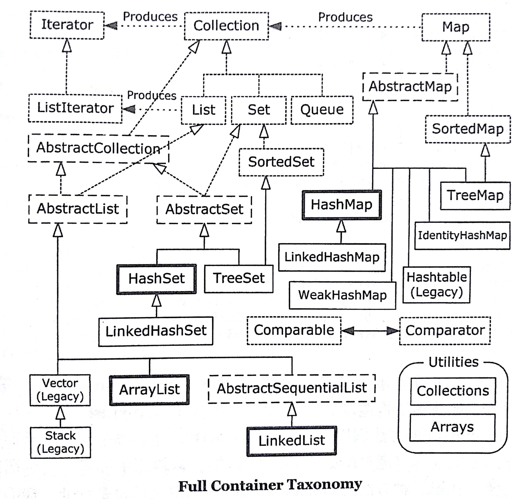
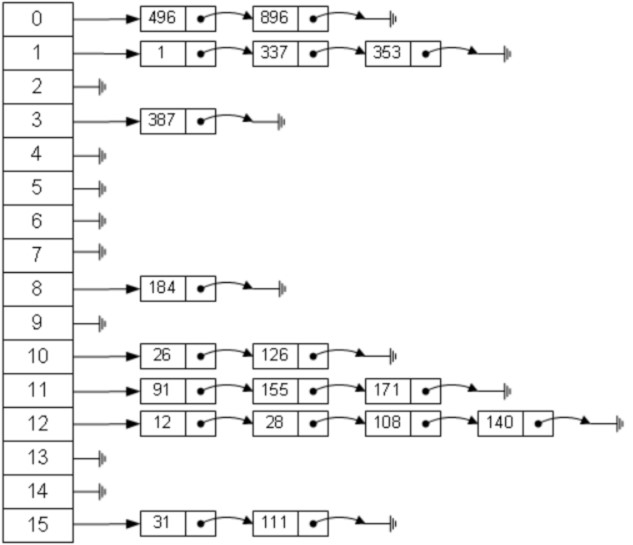
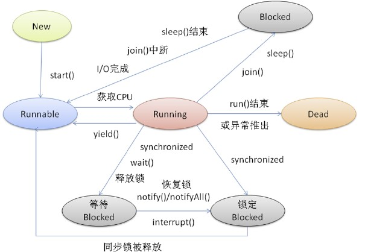
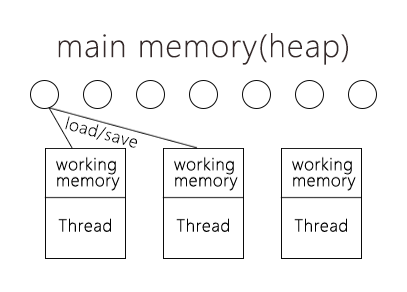
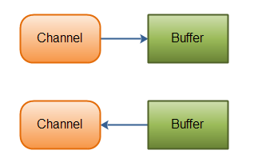
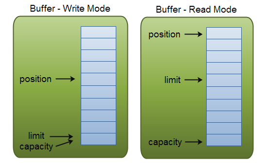

<!DOCTYPE html>
<html>
<head><meta name="generator" content="Hexo 3.9.0">
  <meta charset="utf-8">
  
  <title>basic-framework | Shaw&#39;s Log</title>
  <meta name="viewport" content="width=device-width, initial-scale=1, maximum-scale=1">
  <link rel="shortcut icon" type="image/ico" href="https://www.flaticon.com/premium-icon/icons/svg/1886/1886189.svg">
  <meta name="description" content="基础框架集合 HashSet HashSet是基于HashMap实现的，在底层HashSet使用HashMap的键来保存数据，因此继承了许多HashMap的特性，例如线程不安全，使用hashCode()配合equals()方法判断一致等。  1234567891011121314151617181920212223242526272829303132333435363738394041424344">
<meta property="og:type" content="article">
<meta property="og:title" content="basic-framework">
<meta property="og:url" content="http://yoursite.com/2019/07/13/basic-framework/index.html">
<meta property="og:site_name" content="Shaw&#39;s Log">
<meta property="og:description" content="基础框架集合 HashSet HashSet是基于HashMap实现的，在底层HashSet使用HashMap的键来保存数据，因此继承了许多HashMap的特性，例如线程不安全，使用hashCode()配合equals()方法判断一致等。  1234567891011121314151617181920212223242526272829303132333435363738394041424344">
<meta property="og:locale" content="zh-CN">
<meta property="og:image" content="http://yoursite.com/2019/07/13/basic-framework/02dc4bdc-f928-4ee2-bef7-3d4942ff0db7.jpg">
<meta property="og:image" content="http://yoursite.com/2019/07/13/basic-framework/74114e5b-7315-471c-ae83-ffd56a2156c3.jpg">
<meta property="og:image" content="http://yoursite.com/2019/07/13/basic-framework/b1fe6ea3-aecc-4065-a42a-16cba5cdd8f7.jpg">
<meta property="og:image" content="http://incdn1.b0.upaiyun.com/2016/08/3ff01545fb674bcdeb7f4d616f85f8f4.png">
<meta property="og:image" content="http://yoursite.com/2019/07/13/basic-framework/d73dabdc-7495-45ba-af59-77c388132b32.png">
<meta property="og:image" content="http://yoursite.com/2019/07/13/basic-framework/11b60fde-5f2d-4e86-8dcf-1892ac7ee0e3.png">
<meta property="og:image" content="http://yoursite.com/2019/07/13/basic-framework/5472434d-505e-49e7-99de-f4ffcfa55f60.png">
<meta property="og:updated_time" content="2019-07-13T16:03:37.197Z">
<meta name="twitter:card" content="summary">
<meta name="twitter:title" content="basic-framework">
<meta name="twitter:description" content="基础框架集合 HashSet HashSet是基于HashMap实现的，在底层HashSet使用HashMap的键来保存数据，因此继承了许多HashMap的特性，例如线程不安全，使用hashCode()配合equals()方法判断一致等。  1234567891011121314151617181920212223242526272829303132333435363738394041424344">
<meta name="twitter:image" content="http://yoursite.com/2019/07/13/basic-framework/02dc4bdc-f928-4ee2-bef7-3d4942ff0db7.jpg">
  
  <link rel="stylesheet" href="/css/index.css">
</head>
</html>
<body style="


  background-color: #eff0f6

">
  <div id="container">
    <nav id="nav">
  <header class="header">
    <a href="/" class="title">Shaw&#39;s Log</a>
    <span class="subtitle">talk is cheap, show me your code</span>
  </header>
  <div class="ctnWrap">
    <div class="icons">
      
        
          
            <a href="https://github.com/ShawJie" target="_blank" class="nav-icn iconfont icon-github"></a>
          
        
      
    </div>
    <div class="menu">
      
        
            <a href="/" class="nav-menu ">HOME</a>
          
        
            <a href="/archives" class="nav-menu ">ARCHIVE</a>
          
        
            <a href="/about" class="nav-menu ">ABOUT</a>
          
        
      
    </div>
  </div>
</nav>
    <div id="main"><section class="article">
  <h2 class="title">basic-framework</h2>
  <p class="sub">7月 13, 2019</p>
  <article class="content">
    <h1 id="基础框架"><a href="#基础框架" class="headerlink" title="基础框架"></a>基础框架</h1><h2 id="集合"><a href="#集合" class="headerlink" title="集合"></a>集合</h2><p></p>
<h3 id="HashSet"><a href="#HashSet" class="headerlink" title="HashSet"></a>HashSet</h3><blockquote>
<p>HashSet是基于HashMap实现的，在底层HashSet使用HashMap的<strong>键</strong>来保存数据，因此继承了许多HashMap的特性，例如线程不安全，使用hashCode()配合equals()方法判断一致等。</p>
</blockquote>
<figure class="highlight java"><table><tr><td class="gutter"><pre><span class="line">1</span><br><span class="line">2</span><br><span class="line">3</span><br><span class="line">4</span><br><span class="line">5</span><br><span class="line">6</span><br><span class="line">7</span><br><span class="line">8</span><br><span class="line">9</span><br><span class="line">10</span><br><span class="line">11</span><br><span class="line">12</span><br><span class="line">13</span><br><span class="line">14</span><br><span class="line">15</span><br><span class="line">16</span><br><span class="line">17</span><br><span class="line">18</span><br><span class="line">19</span><br><span class="line">20</span><br><span class="line">21</span><br><span class="line">22</span><br><span class="line">23</span><br><span class="line">24</span><br><span class="line">25</span><br><span class="line">26</span><br><span class="line">27</span><br><span class="line">28</span><br><span class="line">29</span><br><span class="line">30</span><br><span class="line">31</span><br><span class="line">32</span><br><span class="line">33</span><br><span class="line">34</span><br><span class="line">35</span><br><span class="line">36</span><br><span class="line">37</span><br><span class="line">38</span><br><span class="line">39</span><br><span class="line">40</span><br><span class="line">41</span><br><span class="line">42</span><br><span class="line">43</span><br><span class="line">44</span><br><span class="line">45</span><br><span class="line">46</span><br><span class="line">47</span><br><span class="line">48</span><br><span class="line">49</span><br><span class="line">50</span><br><span class="line">51</span><br><span class="line">52</span><br><span class="line">53</span><br><span class="line">54</span><br><span class="line">55</span><br><span class="line">56</span><br><span class="line">57</span><br><span class="line">58</span><br><span class="line">59</span><br><span class="line">60</span><br><span class="line">61</span><br><span class="line">62</span><br><span class="line">63</span><br><span class="line">64</span><br><span class="line">65</span><br><span class="line">66</span><br><span class="line">67</span><br><span class="line">68</span><br><span class="line">69</span><br><span class="line">70</span><br><span class="line">71</span><br><span class="line">72</span><br><span class="line">73</span><br><span class="line">74</span><br><span class="line">75</span><br><span class="line">76</span><br><span class="line">77</span><br><span class="line">78</span><br><span class="line">79</span><br><span class="line">80</span><br><span class="line">81</span><br><span class="line">82</span><br><span class="line">83</span><br><span class="line">84</span><br><span class="line">85</span><br><span class="line">86</span><br><span class="line">87</span><br><span class="line">88</span><br><span class="line">89</span><br><span class="line">90</span><br><span class="line">91</span><br><span class="line">92</span><br><span class="line">93</span><br><span class="line">94</span><br><span class="line">95</span><br><span class="line">96</span><br><span class="line">97</span><br><span class="line">98</span><br><span class="line">99</span><br><span class="line">100</span><br><span class="line">101</span><br><span class="line">102</span><br><span class="line">103</span><br><span class="line">104</span><br><span class="line">105</span><br><span class="line">106</span><br><span class="line">107</span><br><span class="line">108</span><br><span class="line">109</span><br><span class="line">110</span><br><span class="line">111</span><br><span class="line">112</span><br><span class="line">113</span><br></pre></td><td class="code"><pre><span class="line"><span class="keyword">public</span> <span class="class"><span class="keyword">class</span> <span class="title">HashSet</span>&lt;<span class="title">E</span>&gt;</span></span><br><span class="line"><span class="class">    <span class="keyword">extends</span> <span class="title">AbstractSet</span>&lt;<span class="title">E</span>&gt;</span></span><br><span class="line"><span class="class">    <span class="keyword">implements</span> <span class="title">Set</span>&lt;<span class="title">E</span>&gt;, <span class="title">Cloneable</span>, <span class="title">java</span>.<span class="title">io</span>.<span class="title">Serializable</span></span></span><br><span class="line"><span class="class"></span>&#123;</span><br><span class="line">    <span class="keyword">static</span> <span class="keyword">final</span> <span class="keyword">long</span> serialVersionUID = -<span class="number">5024744406713321676L</span>;</span><br><span class="line"></span><br><span class="line">    <span class="keyword">private</span> <span class="keyword">transient</span> HashMap&lt;E,Object&gt; map;</span><br><span class="line"></span><br><span class="line">    <span class="comment">/*</span></span><br><span class="line"><span class="comment">     * 因为HashSet是使用HashMap的键作为数据的储存位置，</span></span><br><span class="line"><span class="comment">     * 所以虚构了一个object对象作为Hashmap的值储存</span></span><br><span class="line"><span class="comment">     */</span></span><br><span class="line">    <span class="keyword">private</span> <span class="keyword">static</span> <span class="keyword">final</span> Object PRESENT = <span class="keyword">new</span> Object();</span><br><span class="line"></span><br><span class="line">    <span class="comment">/*</span></span><br><span class="line"><span class="comment">     * 构建一个新的空HashMap，并将装填因子默认设置为0.75，容量默认设置为16</span></span><br><span class="line"><span class="comment">     */</span></span><br><span class="line">    <span class="function"><span class="keyword">public</span> <span class="title">HashSet</span><span class="params">()</span> </span>&#123;</span><br><span class="line">        map = <span class="keyword">new</span> HashMap&lt;&gt;();</span><br><span class="line">    &#125;</span><br><span class="line">    </span><br><span class="line">    <span class="comment">/*</span></span><br><span class="line"><span class="comment">     * 创建了一个新的HashMap并将装填因子设置为0.75，容量默认设置为16</span></span><br><span class="line"><span class="comment">     * 再将所有的Collection里的元素装填进HashMap</span></span><br><span class="line"><span class="comment">     */</span></span><br><span class="line">    <span class="function"><span class="keyword">public</span> <span class="title">HashSet</span><span class="params">(Collection&lt;? extends E&gt; c)</span> </span>&#123;</span><br><span class="line">        map = <span class="keyword">new</span> HashMap&lt;&gt;(Math.max((<span class="keyword">int</span>) (c.size()/.<span class="number">75f</span>) + <span class="number">1</span>, <span class="number">16</span>));</span><br><span class="line">        addAll(c);</span><br><span class="line">    &#125;</span><br><span class="line">    </span><br><span class="line">    <span class="comment">/*</span></span><br><span class="line"><span class="comment">     * 构建了一个自定义容量和装载因子HashSet(HashMap)</span></span><br><span class="line"><span class="comment">     * 如果传入参数&#123;初始容量：initialCapacity&#125;小于0</span></span><br><span class="line"><span class="comment">     * 或&#123;装填因子:locdFactor&#125;为负数则会抛出IllegalArgumentException</span></span><br><span class="line"><span class="comment">     */</span></span><br><span class="line">    <span class="function"><span class="keyword">public</span> <span class="title">HashSet</span><span class="params">(<span class="keyword">int</span> initialCapacity, <span class="keyword">float</span> loadFactor)</span> </span>&#123;</span><br><span class="line">        map = <span class="keyword">new</span> HashMap&lt;&gt;(initialCapacity, loadFactor);</span><br><span class="line">    &#125;</span><br><span class="line">    <span class="comment">/*</span></span><br><span class="line"><span class="comment">     * 与上一个构造方法同理，构建了一个自定义容量的HashSet(HashMap)</span></span><br><span class="line"><span class="comment">     * 默认装载因子为0.75</span></span><br><span class="line"><span class="comment">     */</span></span><br><span class="line">    <span class="function"><span class="keyword">public</span> <span class="title">HashSet</span><span class="params">(<span class="keyword">int</span> initialCapacity)</span> </span>&#123;</span><br><span class="line">        map = <span class="keyword">new</span> HashMap&lt;&gt;(initialCapacity);</span><br><span class="line">    &#125;</span><br><span class="line">    </span><br><span class="line">    <span class="comment">/*</span></span><br><span class="line"><span class="comment">     * 构建一个新的空LinkedHashMap</span></span><br><span class="line"><span class="comment">     * 此构造方法为私有，只是表示对LinkedHashSet的支持</span></span><br><span class="line"><span class="comment">     */</span></span><br><span class="line">    HashSet(<span class="keyword">int</span> initialCapacity, <span class="keyword">float</span> loadFactor, <span class="keyword">boolean</span> dummy) &#123;</span><br><span class="line">        map = <span class="keyword">new</span> LinkedHashMap&lt;&gt;(initialCapacity, loadFactor);</span><br><span class="line">    &#125;</span><br><span class="line">    </span><br><span class="line">    <span class="comment">/*</span></span><br><span class="line"><span class="comment">     * 返回一个迭代器，由此可看出元素被存放在HashMap的键中</span></span><br><span class="line"><span class="comment">     */</span></span><br><span class="line">    <span class="function"><span class="keyword">public</span> Iterator&lt;E&gt; <span class="title">iterator</span><span class="params">()</span> </span>&#123;</span><br><span class="line">        <span class="keyword">return</span> map.keySet().iterator();</span><br><span class="line">    &#125;</span><br><span class="line">    </span><br><span class="line">    <span class="comment">/*</span></span><br><span class="line"><span class="comment">     * 返回map中的元素数量，即set的元素数量</span></span><br><span class="line"><span class="comment">     */</span></span><br><span class="line">    <span class="function"><span class="keyword">public</span> <span class="keyword">int</span> <span class="title">size</span><span class="params">()</span> </span>&#123;</span><br><span class="line">        <span class="keyword">return</span> map.size();</span><br><span class="line">    &#125;</span><br><span class="line">    </span><br><span class="line">    <span class="comment">/*</span></span><br><span class="line"><span class="comment">     * 调用map的isEmpty()来判空，底层为map调用size()方法查看是否为0</span></span><br><span class="line"><span class="comment">     */</span></span><br><span class="line">    <span class="function"><span class="keyword">public</span> <span class="keyword">boolean</span> <span class="title">isEmpty</span><span class="params">()</span> </span>&#123;</span><br><span class="line">        <span class="keyword">return</span> map.isEmpty();</span><br><span class="line">    &#125;</span><br><span class="line">    </span><br><span class="line">    <span class="comment">/*</span></span><br><span class="line"><span class="comment">     * 传入对象o进入contains()方法，方法内调用HashMap的containsKey的方法</span></span><br><span class="line"><span class="comment">     * HashMap内部使用getNode获取元素内容 如果为空 则返回不存在</span></span><br><span class="line"><span class="comment">     */</span></span><br><span class="line">    <span class="function"><span class="keyword">public</span> <span class="keyword">boolean</span> <span class="title">contains</span><span class="params">(Object o)</span> </span>&#123;</span><br><span class="line">        <span class="keyword">return</span> map.containsKey(o);</span><br><span class="line">    &#125;</span><br><span class="line">    </span><br><span class="line">    <span class="comment">/*</span></span><br><span class="line"><span class="comment">     * 将对象e通过HashMap的put()置入构建的HashMap中</span></span><br><span class="line"><span class="comment">     * 键为储存对象，值为虚构的object对象</span></span><br><span class="line"><span class="comment">     * 如果对象未存在于Map中 则返回true</span></span><br><span class="line"><span class="comment">     */</span></span><br><span class="line">    <span class="function"><span class="keyword">public</span> <span class="keyword">boolean</span> <span class="title">add</span><span class="params">(E e)</span> </span>&#123;</span><br><span class="line">        <span class="keyword">return</span> map.put(e, PRESENT)==<span class="keyword">null</span>;</span><br><span class="line">    &#125;</span><br><span class="line">    </span><br><span class="line">    <span class="comment">/*</span></span><br><span class="line"><span class="comment">     * 因为map的remove()方法会返回被删除元素的值</span></span><br><span class="line"><span class="comment">     * 所以于虚拟的值对象进行比较就能判断是否删除成功</span></span><br><span class="line"><span class="comment">     */</span></span><br><span class="line">    <span class="function"><span class="keyword">public</span> <span class="keyword">boolean</span> <span class="title">remove</span><span class="params">(Object o)</span> </span>&#123;</span><br><span class="line">        <span class="keyword">return</span> map.remove(o)==PRESENT;</span><br><span class="line">    &#125;</span><br><span class="line">    <span class="comment">/*</span></span><br><span class="line"><span class="comment">     * 通过调用clear()方法清空数组内元素</span></span><br><span class="line"><span class="comment">     * 底层是通过for循环 将数组内所有位置赋值为空</span></span><br><span class="line"><span class="comment">     */</span></span><br><span class="line">    <span class="function"><span class="keyword">public</span> <span class="keyword">void</span> <span class="title">clear</span><span class="params">()</span> </span>&#123;</span><br><span class="line">        map.clear();</span><br><span class="line">    &#125;</span><br><span class="line">    </span><br><span class="line">    <span class="comment">/**</span></span><br><span class="line"><span class="comment">     * JDK9在之后添加了两个方法 writeObject() 和 readObject()</span></span><br><span class="line"><span class="comment">     * 用来完善关于JDK关于Stream流的功能</span></span><br><span class="line"><span class="comment">     * 分别用来序列化数据内容和反序列化数据内容</span></span><br><span class="line"><span class="comment">     */</span></span><br><span class="line">&#125;</span><br></pre></td></tr></table></figure>

<h3 id="HashMap"><a href="#HashMap" class="headerlink" title="HashMap"></a>HashMap</h3><blockquote>
<p>HashMap基于Map接口实现，除了线程不同步和允许空值之外，大致和Hashtable相同。<br>若要获取线程安全的HashMap，可以使用Collections类的静态方法synchronizedMap获得。<code>Map map = Collections.synchronizedMap(new HashMap());</code><br>由于Hash表的特性，Hashmap是无序的。由于Hash表采用了拉链法，即用数组+链表实现结果，解决了数组插入删除难，寻址易；链表插入删除易，寻址难的特点。</p>
</blockquote>
<p></p>
<h4 id="属性"><a href="#属性" class="headerlink" title="属性"></a>属性</h4><p>初始HashMap容量，必须是2的倍数，默认值为16。<br><code>static final int DEFAULT_INITIAL_CAPACITY = 1 &lt;&lt; 4; // aka 16</code></p>
<p>最大容量，如果通过构造函数指定了更大容量则会使用这个数，<br>必须是2的倍数且&lt;= 1&lt;&lt;30。<br><code>static final int MAXIMUM_CAPACITY = 1 &lt;&lt; 30;</code></p>
<p>在创建HashMap如果没有通过构造方法特别指定装在因子则会使用这个默认值。<br><code>static final float DEFAULT_LOAD_FACTOR = 0.75f;</code></p>
<p>由于HashMap采用的是数组+链表的数据结构，<br>所以当链表的长度大于或者等于这个长度，则扩大数组容量，或者树化链表。<br><code>static final int TREEIFY_THRESHOLD = 8;</code></p>
<p>存放元素的Hash表，在第一次使用的时候被初始化，长度总是2的幂。<br><code>transient Node&lt;K,V&gt;[] table;</code></p>
<p>缓存的entrySet，用于返回需求的键值对序列。<br><code>transient Set&lt;Map.Entry&lt;K,V&gt;&gt; entrySet;</code></p>
<p>记录有多少键值对存在于表中。<br><code>transient int size;</code></p>
<p>记录当前表的结构修改次数，用于迭代器迭代时的修改报错。<br><code>transient int modCount;</code></p>
<p>当装载因子*容量等于该数值时会调整HashMap的容量大小，同时修改threshold的值。<br><code>int threshold;</code></p>
<p>装载因子<br><code>final float loadFactor;</code></p>
<h4 id="构造方法"><a href="#构造方法" class="headerlink" title="构造方法"></a>构造方法</h4><figure class="highlight java"><table><tr><td class="gutter"><pre><span class="line">1</span><br><span class="line">2</span><br><span class="line">3</span><br><span class="line">4</span><br><span class="line">5</span><br><span class="line">6</span><br><span class="line">7</span><br><span class="line">8</span><br><span class="line">9</span><br><span class="line">10</span><br><span class="line">11</span><br><span class="line">12</span><br><span class="line">13</span><br><span class="line">14</span><br><span class="line">15</span><br></pre></td><td class="code"><pre><span class="line"><span class="comment">/*</span></span><br><span class="line"><span class="comment"> * 使用自定义的容量和装载因子构建一个空的HashMap</span></span><br><span class="line"><span class="comment"> * 当自定义容量大于最大容量的时候将容量赋值为最大容量</span></span><br><span class="line"><span class="comment"> * 当装载因子小于或等于0的时候会抛出IllegalArgumentException</span></span><br><span class="line"><span class="comment"> */</span></span><br><span class="line"><span class="function"><span class="keyword">public</span> <span class="title">HashMap</span><span class="params">(<span class="keyword">int</span> initialCapacity, <span class="keyword">float</span> loadFactor)</span> </span>&#123;</span><br><span class="line">    <span class="keyword">if</span> (initialCapacity &lt; <span class="number">0</span>)</span><br><span class="line">        <span class="keyword">throw</span> <span class="keyword">new</span> IllegalArgumentException(<span class="string">"Illegal initial capacity: "</span> + initialCapacity);</span><br><span class="line">    <span class="keyword">if</span> (initialCapacity &gt; MAXIMUM_CAPACITY)</span><br><span class="line">        initialCapacity = MAXIMUM_CAPACITY;</span><br><span class="line">    <span class="keyword">if</span> (loadFactor &lt;= <span class="number">0</span> || Float.isNaN(loadFactor))</span><br><span class="line">        <span class="keyword">throw</span> <span class="keyword">new</span> IllegalArgumentException(<span class="string">"Illegal load factor: "</span> + loadFactor);</span><br><span class="line">    <span class="keyword">this</span>.loadFactor = loadFactor;</span><br><span class="line">    <span class="keyword">this</span>.threshold = tableSizeFor(initialCapacity);</span><br><span class="line">&#125;</span><br></pre></td></tr></table></figure>

<figure class="highlight java"><table><tr><td class="gutter"><pre><span class="line">1</span><br><span class="line">2</span><br><span class="line">3</span><br><span class="line">4</span><br><span class="line">5</span><br><span class="line">6</span><br><span class="line">7</span><br></pre></td><td class="code"><pre><span class="line"><span class="comment">/*</span></span><br><span class="line"><span class="comment"> * 使用自定义的容量去构建一个空的HashMap</span></span><br><span class="line"><span class="comment"> * 而装在因子则使用之前定义的默认的装载因子(0.75)</span></span><br><span class="line"><span class="comment"> */</span></span><br><span class="line"><span class="function"><span class="keyword">public</span> <span class="title">HashMap</span><span class="params">(<span class="keyword">int</span> initialCapacity)</span> </span>&#123;</span><br><span class="line">    <span class="keyword">this</span>(initialCapacity, DEFAULT_LOAD_FACTOR);</span><br><span class="line">&#125;</span><br></pre></td></tr></table></figure>

<figure class="highlight java"><table><tr><td class="gutter"><pre><span class="line">1</span><br><span class="line">2</span><br><span class="line">3</span><br><span class="line">4</span><br><span class="line">5</span><br><span class="line">6</span><br></pre></td><td class="code"><pre><span class="line"><span class="comment">/**</span></span><br><span class="line"><span class="comment"> * 构造一个空的HashMap，所有的参数都被设置为默认值</span></span><br><span class="line"><span class="comment"> */</span></span><br><span class="line"><span class="function"><span class="keyword">public</span> <span class="title">HashMap</span><span class="params">()</span> </span>&#123;</span><br><span class="line">    <span class="keyword">this</span>.loadFactor = DEFAULT_LOAD_FACTOR; <span class="comment">// all other fields defaulted</span></span><br><span class="line">&#125;</span><br></pre></td></tr></table></figure>

<figure class="highlight java"><table><tr><td class="gutter"><pre><span class="line">1</span><br><span class="line">2</span><br><span class="line">3</span><br><span class="line">4</span><br><span class="line">5</span><br><span class="line">6</span><br><span class="line">7</span><br><span class="line">8</span><br></pre></td><td class="code"><pre><span class="line"><span class="comment">/**</span></span><br><span class="line"><span class="comment"> * 构造一个新的HashMap，默认装在因子为0.75</span></span><br><span class="line"><span class="comment"> * 并将所有参数m的内容放置进新的HashMap</span></span><br><span class="line"><span class="comment"> */</span></span><br><span class="line"><span class="function"><span class="keyword">public</span> <span class="title">HashMap</span><span class="params">(Map&lt;? extends K, ? extends V&gt; m)</span> </span>&#123;</span><br><span class="line">    <span class="keyword">this</span>.loadFactor = DEFAULT_LOAD_FACTOR;</span><br><span class="line">    putMapEntries(m, <span class="keyword">false</span>);</span><br><span class="line">&#125;</span><br></pre></td></tr></table></figure>

<h4 id="方法"><a href="#方法" class="headerlink" title="方法"></a>方法</h4><h5 id="Put方法"><a href="#Put方法" class="headerlink" title="Put方法"></a>Put方法</h5><figure class="highlight java"><table><tr><td class="gutter"><pre><span class="line">1</span><br><span class="line">2</span><br><span class="line">3</span><br></pre></td><td class="code"><pre><span class="line"><span class="function"><span class="keyword">public</span> V <span class="title">put</span><span class="params">(K key, V value)</span> </span>&#123;</span><br><span class="line">    <span class="keyword">return</span> putVal(hash(key), key, value, <span class="keyword">false</span>, <span class="keyword">true</span>);</span><br><span class="line">&#125;</span><br></pre></td></tr></table></figure>

<ol>
<li><p>调用hash()计算出Key的hash值，用于确定当前元素应该插入在HashMap数组中的哪个节点</p>
<figure class="highlight java"><table><tr><td class="gutter"><pre><span class="line">1</span><br><span class="line">2</span><br><span class="line">3</span><br><span class="line">4</span><br><span class="line">5</span><br><span class="line">6</span><br><span class="line">7</span><br><span class="line">8</span><br><span class="line">9</span><br><span class="line">10</span><br><span class="line">11</span><br><span class="line">12</span><br><span class="line">13</span><br><span class="line">14</span><br><span class="line">15</span><br><span class="line">16</span><br><span class="line">17</span><br><span class="line">18</span><br><span class="line">19</span><br><span class="line">20</span><br><span class="line">21</span><br><span class="line">22</span><br><span class="line">23</span><br><span class="line">24</span><br><span class="line">25</span><br><span class="line">26</span><br><span class="line">27</span><br><span class="line">28</span><br><span class="line">29</span><br><span class="line">30</span><br><span class="line">31</span><br><span class="line">32</span><br><span class="line">33</span><br><span class="line">34</span><br><span class="line">35</span><br><span class="line">36</span><br><span class="line">37</span><br><span class="line">38</span><br><span class="line">39</span><br></pre></td><td class="code"><pre><span class="line"><span class="function"><span class="keyword">final</span> V <span class="title">putVal</span><span class="params">(<span class="keyword">int</span> hash, K key, V value, <span class="keyword">boolean</span> onlyIfAbsent, <span class="keyword">boolean</span> evict)</span> </span>&#123;</span><br><span class="line">    Node&lt;K,V&gt;[] tab; Node&lt;K,V&gt; p; <span class="keyword">int</span> n, i;</span><br><span class="line">    <span class="keyword">if</span> ((tab = table) == <span class="keyword">null</span> || (n = tab.length) == <span class="number">0</span>)</span><br><span class="line">        n = (tab = resize()).length;</span><br><span class="line">    <span class="keyword">if</span> ((p = tab[i = (n - <span class="number">1</span>) &amp; hash]) == <span class="keyword">null</span>)</span><br><span class="line">        tab[i] = newNode(hash, key, value, <span class="keyword">null</span>);</span><br><span class="line">    <span class="keyword">else</span> &#123;</span><br><span class="line">        Node&lt;K,V&gt; e; K k;</span><br><span class="line">        <span class="keyword">if</span> (p.hash == hash &amp;&amp; ((k = p.key) == key || (key != <span class="keyword">null</span> &amp;&amp; key.equals(k))))</span><br><span class="line">            e = p;</span><br><span class="line">        <span class="keyword">else</span> <span class="keyword">if</span> (p <span class="keyword">instanceof</span> TreeNode)</span><br><span class="line">            e = ((TreeNode&lt;K,V&gt;)p).putTreeVal(<span class="keyword">this</span>, tab, hash, key, value);</span><br><span class="line">        <span class="keyword">else</span> &#123;</span><br><span class="line">            <span class="keyword">for</span> (<span class="keyword">int</span> binCount = <span class="number">0</span>; ; ++binCount) &#123;</span><br><span class="line">                <span class="keyword">if</span> ((e = p.next) == <span class="keyword">null</span>) &#123;</span><br><span class="line">                    p.next = newNode(hash, key, value, <span class="keyword">null</span>);</span><br><span class="line">                    <span class="keyword">if</span> (binCount &gt;= TREEIFY_THRESHOLD - <span class="number">1</span>) <span class="comment">// -1 for 1st</span></span><br><span class="line">                        treeifyBin(tab, hash);</span><br><span class="line">                    <span class="keyword">break</span>;</span><br><span class="line">                &#125;</span><br><span class="line">                <span class="keyword">if</span> (e.hash == hash &amp;&amp; ((k = e.key) == key || (key != <span class="keyword">null</span> &amp;&amp; key.equals(k))))</span><br><span class="line">                    <span class="keyword">break</span>;</span><br><span class="line">                p = e;</span><br><span class="line">            &#125;</span><br><span class="line">        &#125;</span><br><span class="line">        <span class="keyword">if</span> (e != <span class="keyword">null</span>) &#123; <span class="comment">// existing mapping for key</span></span><br><span class="line">            V oldValue = e.value;</span><br><span class="line">            <span class="keyword">if</span> (!onlyIfAbsent || oldValue == <span class="keyword">null</span>)</span><br><span class="line">                e.value = value;</span><br><span class="line">            afterNodeAccess(e);</span><br><span class="line">            <span class="keyword">return</span> oldValue;</span><br><span class="line">        &#125;</span><br><span class="line">    &#125;</span><br><span class="line">    ++modCount;</span><br><span class="line">    <span class="keyword">if</span> (++size &gt; threshold)</span><br><span class="line">        resize();</span><br><span class="line">    afterNodeInsertion(evict);</span><br><span class="line">    <span class="keyword">return</span> <span class="keyword">null</span>;</span><br><span class="line">&#125;</span><br></pre></td></tr></table></figure>
</li>
<li><p>如果HashMap数组未初始化，则会在putVal()方法内调用resize()方法进行初始化</p>
<figure class="highlight java"><table><tr><td class="gutter"><pre><span class="line">1</span><br><span class="line">2</span><br></pre></td><td class="code"><pre><span class="line">newCap = DEFAULT_INITIAL_CAPACITY;</span><br><span class="line">newThr = (<span class="keyword">int</span>)(DEFAULT_LOAD_FACTOR * DEFAULT_INITIAL_CAPACITY);</span><br></pre></td></tr></table></figure>
</li>
<li><p>根据hash值确定元素所放置在的数组索引，若当前数组位置为空，则通过new Node()创建一个新的节点</p>
</li>
<li><p>若当前数组位置不为空，则对比当前位置元素的hash值与Key值是否与传入元素相等，如相等，则将传入元素覆盖内容，更新Value内容，如不相等，则循环当前数组位置链表，获取next值，进行hash值、Key值的对比，若相等则覆盖Value内容，若列表迭代完毕，则将元素放到链表最末端。</p>
</li>
<li><p>若循环对比时链表内元素<code>if (binCount &gt;= TREEIFY_THRESHOLD - 1)</code>，则会调用treeifyBin()方法。</p>
<figure class="highlight java"><table><tr><td class="gutter"><pre><span class="line">1</span><br><span class="line">2</span><br><span class="line">3</span><br><span class="line">4</span><br><span class="line">5</span><br><span class="line">6</span><br><span class="line">7</span><br><span class="line">8</span><br><span class="line">9</span><br><span class="line">10</span><br><span class="line">11</span><br><span class="line">12</span><br><span class="line">13</span><br><span class="line">14</span><br><span class="line">15</span><br><span class="line">16</span><br><span class="line">17</span><br><span class="line">18</span><br><span class="line">19</span><br><span class="line">20</span><br></pre></td><td class="code"><pre><span class="line"><span class="function"><span class="keyword">final</span> <span class="keyword">void</span> <span class="title">treeifyBin</span><span class="params">(Node&lt;K,V&gt;[] tab, <span class="keyword">int</span> hash)</span> </span>&#123;</span><br><span class="line">    <span class="keyword">int</span> n, index; Node&lt;K,V&gt; e;</span><br><span class="line">    <span class="keyword">if</span> (tab == <span class="keyword">null</span> || (n = tab.length) &lt; MIN_TREEIFY_CAPACITY)</span><br><span class="line">        resize();</span><br><span class="line">    <span class="keyword">else</span> <span class="keyword">if</span> ((e = tab[index = (n - <span class="number">1</span>) &amp; hash]) != <span class="keyword">null</span>) &#123;</span><br><span class="line">        TreeNode&lt;K,V&gt; hd = <span class="keyword">null</span>, tl = <span class="keyword">null</span>;</span><br><span class="line">        <span class="keyword">do</span> &#123;</span><br><span class="line">            TreeNode&lt;K,V&gt; p = replacementTreeNode(e, <span class="keyword">null</span>);</span><br><span class="line">            <span class="keyword">if</span> (tl == <span class="keyword">null</span>)</span><br><span class="line">                hd = p;</span><br><span class="line">            <span class="keyword">else</span> &#123;</span><br><span class="line">                p.prev = tl;</span><br><span class="line">                tl.next = p;</span><br><span class="line">            &#125;</span><br><span class="line">            tl = p;</span><br><span class="line">        &#125; <span class="keyword">while</span> ((e = e.next) != <span class="keyword">null</span>);</span><br><span class="line">        <span class="keyword">if</span> ((tab[index] = hd) != <span class="keyword">null</span>)</span><br><span class="line">            hd.treeify(tab);</span><br><span class="line">    &#125;</span><br><span class="line">&#125;</span><br></pre></td></tr></table></figure>
</li>
<li><p>treeifyBin()方法内对HashMap数组的length进行判断,若小于<code>MIN_TREEIFY_CAPACITY</code>(64) 则会通过resize()方法扩大数组的容量，否则会将当前数组下标内容的Node链表转换为TreeNode，因为变成TreeNode后索引元素会快很多</p>
</li>
<li><p>更新modCount属性和size属性，若size属性大于threshold，则会调用resize()方法扩大HashMap数组的容量</p>
<figure class="highlight java"><table><tr><td class="gutter"><pre><span class="line">1</span><br><span class="line">2</span><br><span class="line">3</span><br><span class="line">4</span><br><span class="line">5</span><br><span class="line">6</span><br><span class="line">7</span><br><span class="line">8</span><br><span class="line">9</span><br><span class="line">10</span><br><span class="line">11</span><br><span class="line">12</span><br><span class="line">13</span><br><span class="line">14</span><br><span class="line">15</span><br><span class="line">16</span><br><span class="line">17</span><br><span class="line">18</span><br><span class="line">19</span><br><span class="line">20</span><br><span class="line">21</span><br><span class="line">22</span><br><span class="line">23</span><br><span class="line">24</span><br><span class="line">25</span><br><span class="line">26</span><br><span class="line">27</span><br><span class="line">28</span><br><span class="line">29</span><br><span class="line">30</span><br><span class="line">31</span><br><span class="line">32</span><br><span class="line">33</span><br><span class="line">34</span><br><span class="line">35</span><br><span class="line">36</span><br><span class="line">37</span><br><span class="line">38</span><br><span class="line">39</span><br><span class="line">40</span><br><span class="line">41</span><br><span class="line">42</span><br><span class="line">43</span><br><span class="line">44</span><br><span class="line">45</span><br><span class="line">46</span><br><span class="line">47</span><br><span class="line">48</span><br><span class="line">49</span><br><span class="line">50</span><br><span class="line">51</span><br><span class="line">52</span><br><span class="line">53</span><br><span class="line">54</span><br><span class="line">55</span><br><span class="line">56</span><br><span class="line">57</span><br><span class="line">58</span><br><span class="line">59</span><br><span class="line">60</span><br><span class="line">61</span><br><span class="line">62</span><br><span class="line">63</span><br><span class="line">64</span><br><span class="line">65</span><br><span class="line">66</span><br><span class="line">67</span><br><span class="line">68</span><br><span class="line">69</span><br><span class="line">70</span><br><span class="line">71</span><br><span class="line">72</span><br><span class="line">73</span><br><span class="line">74</span><br><span class="line">75</span><br><span class="line">76</span><br></pre></td><td class="code"><pre><span class="line"><span class="keyword">final</span> Node&lt;K,V&gt;[] resize() &#123;</span><br><span class="line">    Node&lt;K,V&gt;[] oldTab = table;</span><br><span class="line">    <span class="keyword">int</span> oldCap = (oldTab == <span class="keyword">null</span>) ? <span class="number">0</span> : oldTab.length;</span><br><span class="line">    <span class="keyword">int</span> oldThr = threshold;</span><br><span class="line">    <span class="keyword">int</span> newCap, newThr = <span class="number">0</span>;</span><br><span class="line">    <span class="comment">// 如果HashMap数组内已经有值，则将容量和阈值扩大一倍</span></span><br><span class="line">    <span class="keyword">if</span> (oldCap &gt; <span class="number">0</span>) &#123;</span><br><span class="line">        <span class="keyword">if</span> (oldCap &gt;= MAXIMUM_CAPACITY) &#123;</span><br><span class="line">            threshold = Integer.MAX_VALUE;</span><br><span class="line">            <span class="keyword">return</span> oldTab;</span><br><span class="line">        &#125;</span><br><span class="line">        <span class="keyword">else</span> <span class="keyword">if</span> ((newCap = oldCap &lt;&lt; <span class="number">1</span>) &lt; MAXIMUM_CAPACITY &amp;&amp;</span><br><span class="line">                 oldCap &gt;= DEFAULT_INITIAL_CAPACITY)</span><br><span class="line">            newThr = oldThr &lt;&lt; <span class="number">1</span>; <span class="comment">// double threshold</span></span><br><span class="line">    &#125;</span><br><span class="line">    <span class="keyword">else</span> <span class="keyword">if</span> (oldThr &gt; <span class="number">0</span>) <span class="comment">// initial capacity was placed in threshold</span></span><br><span class="line">        newCap = oldThr;</span><br><span class="line">    <span class="keyword">else</span> &#123; <span class="comment">// 在初次使用的时候会初始化容量及阈值的数据</span></span><br><span class="line">        newCap = DEFAULT_INITIAL_CAPACITY;</span><br><span class="line">        newThr = (<span class="keyword">int</span>)(DEFAULT_LOAD_FACTOR * DEFAULT_INITIAL_CAPACITY);</span><br><span class="line">    &#125;</span><br><span class="line">    <span class="keyword">if</span> (newThr == <span class="number">0</span>) &#123;</span><br><span class="line">        <span class="keyword">float</span> ft = (<span class="keyword">float</span>)newCap * loadFactor;</span><br><span class="line">        newThr = (newCap &lt; MAXIMUM_CAPACITY &amp;&amp; ft &lt; (<span class="keyword">float</span>)MAXIMUM_CAPACITY ?</span><br><span class="line">                  (<span class="keyword">int</span>)ft : Integer.MAX_VALUE);</span><br><span class="line">    &#125;</span><br><span class="line">    threshold = newThr;</span><br><span class="line">    <span class="comment">// 创建一个新容量的Node数组</span></span><br><span class="line">    <span class="meta">@SuppressWarnings</span>(&#123;<span class="string">"rawtypes"</span>,<span class="string">"unchecked"</span>&#125;)</span><br><span class="line">    Node&lt;K,V&gt;[] newTab = (Node&lt;K,V&gt;[])<span class="keyword">new</span> Node[newCap];</span><br><span class="line">    table = newTab;</span><br><span class="line">    <span class="keyword">if</span> (oldTab != <span class="keyword">null</span>) &#123;</span><br><span class="line">        <span class="comment">// 循环原HashMap数组内元素放置到新数组中去</span></span><br><span class="line">        <span class="keyword">for</span> (<span class="keyword">int</span> j = <span class="number">0</span>; j &lt; oldCap; ++j) &#123;</span><br><span class="line">            Node&lt;K,V&gt; e;</span><br><span class="line">            <span class="keyword">if</span> ((e = oldTab[j]) != <span class="keyword">null</span>) &#123;</span><br><span class="line">                oldTab[j] = <span class="keyword">null</span>;</span><br><span class="line">                <span class="keyword">if</span> (e.next == <span class="keyword">null</span>)</span><br><span class="line">                    newTab[e.hash &amp; (newCap - <span class="number">1</span>)] = e;</span><br><span class="line">                <span class="keyword">else</span> <span class="keyword">if</span> (e <span class="keyword">instanceof</span> TreeNode)</span><br><span class="line">                    ((TreeNode&lt;K,V&gt;)e).split(<span class="keyword">this</span>, newTab, j, oldCap);</span><br><span class="line">                <span class="keyword">else</span> &#123; <span class="comment">// preserve order</span></span><br><span class="line">                    Node&lt;K,V&gt; loHead = <span class="keyword">null</span>, loTail = <span class="keyword">null</span>;</span><br><span class="line">                    Node&lt;K,V&gt; hiHead = <span class="keyword">null</span>, hiTail = <span class="keyword">null</span>;</span><br><span class="line">                    Node&lt;K,V&gt; next;</span><br><span class="line">                    <span class="keyword">do</span> &#123;</span><br><span class="line">                        next = e.next;</span><br><span class="line">                        <span class="keyword">if</span> ((e.hash &amp; oldCap) == <span class="number">0</span>) &#123;</span><br><span class="line">                            <span class="keyword">if</span> (loTail == <span class="keyword">null</span>)</span><br><span class="line">                                loHead = e;</span><br><span class="line">                            <span class="keyword">else</span></span><br><span class="line">                                loTail.next = e;</span><br><span class="line">                            loTail = e;</span><br><span class="line">                        &#125;</span><br><span class="line">                        <span class="keyword">else</span> &#123;</span><br><span class="line">                            <span class="keyword">if</span> (hiTail == <span class="keyword">null</span>)</span><br><span class="line">                                hiHead = e;</span><br><span class="line">                            <span class="keyword">else</span></span><br><span class="line">                                hiTail.next = e;</span><br><span class="line">                            hiTail = e;</span><br><span class="line">                        &#125;</span><br><span class="line">                    &#125; <span class="keyword">while</span> ((e = next) != <span class="keyword">null</span>);</span><br><span class="line">                    <span class="keyword">if</span> (loTail != <span class="keyword">null</span>) &#123;</span><br><span class="line">                        loTail.next = <span class="keyword">null</span>;</span><br><span class="line">                        newTab[j] = loHead;</span><br><span class="line">                    &#125;</span><br><span class="line">                    <span class="keyword">if</span> (hiTail != <span class="keyword">null</span>) &#123;</span><br><span class="line">                        hiTail.next = <span class="keyword">null</span>;</span><br><span class="line">                        newTab[j + oldCap] = hiHead;</span><br><span class="line">                    &#125;</span><br><span class="line">                &#125;</span><br><span class="line">            &#125;</span><br><span class="line">        &#125;</span><br><span class="line">    &#125;</span><br><span class="line">    <span class="keyword">return</span> newTab;</span><br><span class="line">&#125;</span><br></pre></td></tr></table></figure>
</li>
<li><p>若是覆盖元素，则返回<code>OldVal</code>，若是新增元素，则返回<code>null</code></p>
</li>
</ol>
<h5 id="Get方法"><a href="#Get方法" class="headerlink" title="Get方法"></a>Get方法</h5><ol>
<li><p>通过hash()计算Key的hash值，调用getNode()方法</p>
<figure class="highlight java"><table><tr><td class="gutter"><pre><span class="line">1</span><br><span class="line">2</span><br><span class="line">3</span><br><span class="line">4</span><br></pre></td><td class="code"><pre><span class="line"><span class="function"><span class="keyword">public</span> V <span class="title">get</span><span class="params">(Object key)</span> </span>&#123;</span><br><span class="line">    Node&lt;K,V&gt; e;</span><br><span class="line">    <span class="keyword">return</span> (e = getNode(hash(key), key)) == <span class="keyword">null</span> ? <span class="keyword">null</span> : e.value;</span><br><span class="line">&#125;</span><br></pre></td></tr></table></figure>
</li>
<li><p>通过hash值计算出元素在HashMap数组内索引，对比获取到的第一个元素的hash值与Key值，若相等则返回第一个元素，否则循环链表进行对比，若获取到相等元素则返回元素，反之则返回null</p>
<figure class="highlight java"><table><tr><td class="gutter"><pre><span class="line">1</span><br><span class="line">2</span><br><span class="line">3</span><br><span class="line">4</span><br><span class="line">5</span><br><span class="line">6</span><br><span class="line">7</span><br><span class="line">8</span><br><span class="line">9</span><br><span class="line">10</span><br><span class="line">11</span><br><span class="line">12</span><br><span class="line">13</span><br><span class="line">14</span><br><span class="line">15</span><br><span class="line">16</span><br><span class="line">17</span><br><span class="line">18</span><br><span class="line">19</span><br></pre></td><td class="code"><pre><span class="line"><span class="function"><span class="keyword">final</span> Node&lt;K,V&gt; <span class="title">getNode</span><span class="params">(<span class="keyword">int</span> hash, Object key)</span> </span>&#123;</span><br><span class="line">    Node&lt;K,V&gt;[] tab; Node&lt;K,V&gt; first, e; <span class="keyword">int</span> n; K k;</span><br><span class="line">    <span class="keyword">if</span> ((tab = table) != <span class="keyword">null</span> &amp;&amp; (n = tab.length) &gt; <span class="number">0</span> &amp;&amp;</span><br><span class="line">        (first = tab[(n - <span class="number">1</span>) &amp; hash]) != <span class="keyword">null</span>) &#123;</span><br><span class="line">        <span class="keyword">if</span> (first.hash == hash &amp;&amp; <span class="comment">// always check first node</span></span><br><span class="line">            ((k = first.key) == key || (key != <span class="keyword">null</span> &amp;&amp; key.equals(k))))</span><br><span class="line">            <span class="keyword">return</span> first;</span><br><span class="line">        <span class="keyword">if</span> ((e = first.next) != <span class="keyword">null</span>) &#123;</span><br><span class="line">            <span class="keyword">if</span> (first <span class="keyword">instanceof</span> TreeNode)</span><br><span class="line">                <span class="keyword">return</span> ((TreeNode&lt;K,V&gt;)first).getTreeNode(hash, key);</span><br><span class="line">            <span class="keyword">do</span> &#123;</span><br><span class="line">                <span class="keyword">if</span> (e.hash == hash &amp;&amp;</span><br><span class="line">                    ((k = e.key) == key || (key != <span class="keyword">null</span> &amp;&amp; key.equals(k))))</span><br><span class="line">                    <span class="keyword">return</span> e;</span><br><span class="line">            &#125; <span class="keyword">while</span> ((e = e.next) != <span class="keyword">null</span>);</span><br><span class="line">        &#125;</span><br><span class="line">    &#125;</span><br><span class="line">    <span class="keyword">return</span> <span class="keyword">null</span>;</span><br><span class="line">&#125;</span><br></pre></td></tr></table></figure>

</li>
</ol>
<h5 id="ContainsKey方法"><a href="#ContainsKey方法" class="headerlink" title="ContainsKey方法"></a>ContainsKey方法</h5><ol>
<li>通过getNode()方法获取当前元素，若返回值为空，则存在，反之不存在<figure class="highlight java"><table><tr><td class="gutter"><pre><span class="line">1</span><br><span class="line">2</span><br><span class="line">3</span><br></pre></td><td class="code"><pre><span class="line"><span class="function"><span class="keyword">public</span> <span class="keyword">boolean</span> <span class="title">containsKey</span><span class="params">(Object key)</span> </span>&#123;</span><br><span class="line">    <span class="keyword">return</span> getNode(hash(key), key) != <span class="keyword">null</span>;</span><br><span class="line">&#125;</span><br></pre></td></tr></table></figure>

</li>
</ol>
<h5 id="Remove方法"><a href="#Remove方法" class="headerlink" title="Remove方法"></a>Remove方法</h5><ol>
<li><p>通过hash()方法计算出元素的hash值，调用removeNode()方法</p>
<figure class="highlight java"><table><tr><td class="gutter"><pre><span class="line">1</span><br><span class="line">2</span><br><span class="line">3</span><br><span class="line">4</span><br><span class="line">5</span><br></pre></td><td class="code"><pre><span class="line"><span class="function"><span class="keyword">public</span> V <span class="title">remove</span><span class="params">(Object key)</span> </span>&#123;</span><br><span class="line">        Node&lt;K,V&gt; e;</span><br><span class="line">        <span class="keyword">return</span> (e = removeNode(hash(key), key, <span class="keyword">null</span>, <span class="keyword">false</span>, <span class="keyword">true</span>)) == <span class="keyword">null</span> ?</span><br><span class="line">            <span class="keyword">null</span> : e.value;</span><br><span class="line">    &#125;</span><br></pre></td></tr></table></figure>
</li>
<li><p>通过hash值计算出元素在HashMap数组内索引，找到第一个元素，对hash值和Key值进行匹配，如匹配，则存储Node，如不匹配，则遍历链表查找结果。若元素不存在，则直接返回<code>null</code>，若元素存在，则删除元素，并将链表重连，返回被删除元素</p>
<figure class="highlight java"><table><tr><td class="gutter"><pre><span class="line">1</span><br><span class="line">2</span><br><span class="line">3</span><br><span class="line">4</span><br><span class="line">5</span><br><span class="line">6</span><br><span class="line">7</span><br><span class="line">8</span><br><span class="line">9</span><br><span class="line">10</span><br><span class="line">11</span><br><span class="line">12</span><br><span class="line">13</span><br><span class="line">14</span><br><span class="line">15</span><br><span class="line">16</span><br><span class="line">17</span><br><span class="line">18</span><br><span class="line">19</span><br><span class="line">20</span><br><span class="line">21</span><br><span class="line">22</span><br><span class="line">23</span><br><span class="line">24</span><br><span class="line">25</span><br><span class="line">26</span><br><span class="line">27</span><br><span class="line">28</span><br><span class="line">29</span><br><span class="line">30</span><br><span class="line">31</span><br><span class="line">32</span><br><span class="line">33</span><br><span class="line">34</span><br><span class="line">35</span><br><span class="line">36</span><br><span class="line">37</span><br><span class="line">38</span><br><span class="line">39</span><br><span class="line">40</span><br></pre></td><td class="code"><pre><span class="line"><span class="function"><span class="keyword">final</span> Node&lt;K,V&gt; <span class="title">removeNode</span><span class="params">(<span class="keyword">int</span> hash, Object key, Object value,</span></span></span><br><span class="line"><span class="function"><span class="params">                           <span class="keyword">boolean</span> matchValue, <span class="keyword">boolean</span> movable)</span> </span>&#123;</span><br><span class="line">    Node&lt;K,V&gt;[] tab; Node&lt;K,V&gt; p; <span class="keyword">int</span> n, index;</span><br><span class="line">    <span class="keyword">if</span> ((tab = table) != <span class="keyword">null</span> &amp;&amp; (n = tab.length) &gt; <span class="number">0</span> &amp;&amp;</span><br><span class="line">        (p = tab[index = (n - <span class="number">1</span>) &amp; hash]) != <span class="keyword">null</span>) &#123;</span><br><span class="line">        Node&lt;K,V&gt; node = <span class="keyword">null</span>, e; K k; V v;</span><br><span class="line">        <span class="keyword">if</span> (p.hash == hash &amp;&amp;</span><br><span class="line">            ((k = p.key) == key || (key != <span class="keyword">null</span> &amp;&amp; key.equals(k))))</span><br><span class="line">            node = p;</span><br><span class="line">        <span class="keyword">else</span> <span class="keyword">if</span> ((e = p.next) != <span class="keyword">null</span>) &#123;</span><br><span class="line">            <span class="keyword">if</span> (p <span class="keyword">instanceof</span> TreeNode)</span><br><span class="line">                node = ((TreeNode&lt;K,V&gt;)p).getTreeNode(hash, key);</span><br><span class="line">            <span class="keyword">else</span> &#123;</span><br><span class="line">                <span class="keyword">do</span> &#123;</span><br><span class="line">                    <span class="keyword">if</span> (e.hash == hash &amp;&amp;</span><br><span class="line">                        ((k = e.key) == key ||</span><br><span class="line">                         (key != <span class="keyword">null</span> &amp;&amp; key.equals(k)))) &#123;</span><br><span class="line">                        node = e;</span><br><span class="line">                        <span class="keyword">break</span>;</span><br><span class="line">                    &#125;</span><br><span class="line">                    p = e;</span><br><span class="line">                &#125; <span class="keyword">while</span> ((e = e.next) != <span class="keyword">null</span>);</span><br><span class="line">            &#125;</span><br><span class="line">        &#125;</span><br><span class="line">        <span class="keyword">if</span> (node != <span class="keyword">null</span> &amp;&amp; (!matchValue || (v = node.value) == value ||</span><br><span class="line">                             (value != <span class="keyword">null</span> &amp;&amp; value.equals(v)))) &#123;</span><br><span class="line">            <span class="keyword">if</span> (node <span class="keyword">instanceof</span> TreeNode)</span><br><span class="line">                ((TreeNode&lt;K,V&gt;)node).removeTreeNode(<span class="keyword">this</span>, tab, movable);</span><br><span class="line">            <span class="keyword">else</span> <span class="keyword">if</span> (node == p)</span><br><span class="line">                tab[index] = node.next;</span><br><span class="line">            <span class="keyword">else</span></span><br><span class="line">                p.next = node.next;</span><br><span class="line">            ++modCount;</span><br><span class="line">            --size;</span><br><span class="line">            afterNodeRemoval(node);</span><br><span class="line">            <span class="keyword">return</span> node;</span><br><span class="line">        &#125;</span><br><span class="line">    &#125;</span><br><span class="line">    <span class="keyword">return</span> <span class="keyword">null</span>;</span><br><span class="line">&#125;</span><br></pre></td></tr></table></figure>

</li>
</ol>
<h3 id="ArrayList"><a href="#ArrayList" class="headerlink" title="ArrayList"></a>ArrayList</h3><blockquote>
<p>ArrayList实现了List接口，从底层来看是通过数组实现，与数组相比，它的容量能动态扩展，与Vector不同，ArrayList是线程不同步的，所以在实际使用中，一般建议在单线程使用ArrayList，多线程使用Vector。由于是通过数组来储存元素，所以相对于链表来说，随机访问的效率更高，但是增删的效率很低，这点可以在ArrayList的remove方法内得到体现。</p>
</blockquote>
<h4 id="属性-1"><a href="#属性-1" class="headerlink" title="属性"></a>属性</h4><p>ArrayList的初始容量,默认为10<br><code>private static final int DEFAULT_CAPACITY = 10;</code></p>
<p>空的数组实例，在有参构造函数里进行返回<br><code>private static final Object[] EMPTY_ELEMENTDATA = {};</code></p>
<p>用于ArrayList的无参构造函数返回的实例，之所以与EMPTY_ELEMENTDATA区分开是因为这样更方便知道在第一个元素插入时应该要设置多少容量<br><code>private static final Object[] DEFAULTCAPACITY_EMPTY_ELEMENTDATA = {};</code></p>
<p>elementData是ArrayList的数组缓冲区，ArrayList的容量就是数组缓冲区的Length<br>任何空ArrayList例如<strong>DEFAULTCAPACITY_EMPTY_ELEMENTDATA</strong>将在插入第一个元素的时候将容量设为<strong>DEFAULT_CAPACITY</strong><br><code>transient Object[] elementData;</code></p>
<p>ArrayList的大小<br><code>private int size;</code></p>
<p>ArrayList可达的最大大小(2147483639)<br><code>private static final int MAX_ARRAY_SIZE = Integer.MAX_VALUE - 8;</code></p>
<p>记录ArrayList结构发生了多少次改变（AbstractList内属性）<br><code>protected transient int modCount = 0;</code></p>
<h4 id="构造方法-1"><a href="#构造方法-1" class="headerlink" title="构造方法"></a>构造方法</h4><figure class="highlight java"><table><tr><td class="gutter"><pre><span class="line">1</span><br><span class="line">2</span><br><span class="line">3</span><br><span class="line">4</span><br><span class="line">5</span><br><span class="line">6</span><br><span class="line">7</span><br><span class="line">8</span><br></pre></td><td class="code"><pre><span class="line"><span class="comment">/*</span></span><br><span class="line"><span class="comment"> * ArrayList的无参构方法，将DEFAULTCAPACITY_EMPTY_ELEMENTDATA</span></span><br><span class="line"><span class="comment"> * 引用传递给elementData，此时elemenetData.length = 0，size = 0</span></span><br><span class="line"><span class="comment"> * 在第一次执行add方法时容量会扩展为10</span></span><br><span class="line"><span class="comment"> */</span></span><br><span class="line"><span class="function"><span class="keyword">public</span> <span class="title">ArrayList</span><span class="params">()</span> </span>&#123;</span><br><span class="line">    <span class="keyword">this</span>.elementData = DEFAULTCAPACITY_EMPTY_ELEMENTDATA;</span><br><span class="line">&#125;</span><br></pre></td></tr></table></figure>

<figure class="highlight java"><table><tr><td class="gutter"><pre><span class="line">1</span><br><span class="line">2</span><br><span class="line">3</span><br><span class="line">4</span><br><span class="line">5</span><br><span class="line">6</span><br><span class="line">7</span><br><span class="line">8</span><br><span class="line">9</span><br><span class="line">10</span><br><span class="line">11</span><br><span class="line">12</span><br><span class="line">13</span><br><span class="line">14</span><br><span class="line">15</span><br><span class="line">16</span><br></pre></td><td class="code"><pre><span class="line"><span class="comment">/*</span></span><br><span class="line"><span class="comment"> * 使用自定义的容量去创建一个ArrayList</span></span><br><span class="line"><span class="comment"> * 若自定义容量大于0 则通过new Object[]方式创建ArrayList</span></span><br><span class="line"><span class="comment"> * 若自定义容量等于0 则将EMPTY_ELEMENTDATA的引用传递给elementData</span></span><br><span class="line"><span class="comment"> * 若自定义容量小于0 则会抛出IllegalArgumentException</span></span><br><span class="line"><span class="comment"> */</span></span><br><span class="line"><span class="function"><span class="keyword">public</span> <span class="title">ArrayList</span><span class="params">(<span class="keyword">int</span> initialCapacity)</span> </span>&#123;</span><br><span class="line">    <span class="keyword">if</span> (initialCapacity &gt; <span class="number">0</span>) &#123;</span><br><span class="line">        <span class="keyword">this</span>.elementData = <span class="keyword">new</span> Object[initialCapacity];</span><br><span class="line">    &#125; <span class="keyword">else</span> <span class="keyword">if</span> (initialCapacity == <span class="number">0</span>) &#123;</span><br><span class="line">        <span class="keyword">this</span>.elementData = EMPTY_ELEMENTDATA;</span><br><span class="line">    &#125; <span class="keyword">else</span> &#123;</span><br><span class="line">        <span class="keyword">throw</span> <span class="keyword">new</span> IllegalArgumentException(<span class="string">"Illegal Capacity: "</span>+</span><br><span class="line">                                           initialCapacity);</span><br><span class="line">    &#125;</span><br><span class="line">&#125;</span><br></pre></td></tr></table></figure>

<figure class="highlight java"><table><tr><td class="gutter"><pre><span class="line">1</span><br><span class="line">2</span><br><span class="line">3</span><br><span class="line">4</span><br><span class="line">5</span><br><span class="line">6</span><br><span class="line">7</span><br><span class="line">8</span><br><span class="line">9</span><br><span class="line">10</span><br><span class="line">11</span><br><span class="line">12</span><br><span class="line">13</span><br><span class="line">14</span><br><span class="line">15</span><br><span class="line">16</span><br><span class="line">17</span><br><span class="line">18</span><br><span class="line">19</span><br></pre></td><td class="code"><pre><span class="line"><span class="comment">/*</span></span><br><span class="line"><span class="comment"> * 传入一个实现Collection的元素，调用toArray()方法将内容放置进</span></span><br><span class="line"><span class="comment"> * elementData中，由于JDK8中toArray()方法有BUG，无法返回一个Object[]对象</span></span><br><span class="line"><span class="comment"> * 则在下面的逻辑判断中赋予了Size的值并使用Arrays.conyOf方法拷贝了</span></span><br><span class="line"><span class="comment"> * 原数组内元素。若c内没有元素</span></span><br><span class="line"><span class="comment"> * 则将EMPTY_ELEMENTDATA引用传递给elementData</span></span><br><span class="line"><span class="comment"> */</span></span><br><span class="line"><span class="function"><span class="keyword">public</span> <span class="title">ArrayList</span><span class="params">(Collection&lt;? extends E&gt; c)</span> </span>&#123;</span><br><span class="line">    elementData = c.toArray();</span><br><span class="line">    <span class="keyword">if</span> ((size = elementData.length) != <span class="number">0</span>) &#123;</span><br><span class="line">        <span class="comment">// defend against c.toArray (incorrectly) not returning Object[]</span></span><br><span class="line">        <span class="comment">// (see e.g. https://bugs.openjdk.java.net/browse/JDK-6260652)</span></span><br><span class="line">        <span class="keyword">if</span> (elementData.getClass() != Object[].class)</span><br><span class="line">            elementData = Arrays.copyOf(elementData, size, Object[].class);</span><br><span class="line">    &#125; <span class="keyword">else</span> &#123;</span><br><span class="line">        <span class="comment">// replace with empty array.</span></span><br><span class="line">        <span class="keyword">this</span>.elementData = EMPTY_ELEMENTDATA;</span><br><span class="line">    &#125;</span><br><span class="line">&#125;</span><br></pre></td></tr></table></figure>

<h4 id="方法-1"><a href="#方法-1" class="headerlink" title="方法"></a>方法</h4><h5 id="Add方法"><a href="#Add方法" class="headerlink" title="Add方法"></a>Add方法</h5><ol>
<li><p>传入需新增元素，elementData对象，集合大小。对集合大小进行判断，若集合大小等于储存元素的数组长度，则调用grow()方法扩展集合的长度</p>
<figure class="highlight java"><table><tr><td class="gutter"><pre><span class="line">1</span><br><span class="line">2</span><br><span class="line">3</span><br><span class="line">4</span><br><span class="line">5</span><br><span class="line">6</span><br></pre></td><td class="code"><pre><span class="line"><span class="function"><span class="keyword">private</span> <span class="keyword">void</span> <span class="title">add</span><span class="params">(E e, Object[] elementData, <span class="keyword">int</span> s)</span> </span>&#123;</span><br><span class="line">    <span class="keyword">if</span> (s == elementData.length)</span><br><span class="line">        elementData = grow();</span><br><span class="line">    elementData[s] = e;</span><br><span class="line">    size = s + <span class="number">1</span>;</span><br><span class="line">&#125;</span><br></pre></td></tr></table></figure>
</li>
<li><p>在grow()方法中使用了Arrays.copyOf()方法扩展数组，通过newCapacity()方法控制扩展的大小</p>
</li>
<li><p>newCapacity()方法中将新容量值为原容量的1.5倍(向下取整)，将新容量与传入的最小容量进行对比，若小于最小容量或等于最小容量，则去判断elementData的引用是否为<strong>DEFAULTCAPACITY_EMPTY_ELEMENTDATA</strong>，若引用地址相等，则在默认容量与传入最小容量中取大值返回，若不等则判断<code>size + 1 = minCapacity</code>是否为负值，若为负值则抛出OutOfMemoryError，反之返回最小容量。若新容量小于最大容量，则返回新容量，否则返回最大容量</p>
<figure class="highlight java"><table><tr><td class="gutter"><pre><span class="line">1</span><br><span class="line">2</span><br><span class="line">3</span><br><span class="line">4</span><br><span class="line">5</span><br><span class="line">6</span><br><span class="line">7</span><br><span class="line">8</span><br><span class="line">9</span><br><span class="line">10</span><br><span class="line">11</span><br><span class="line">12</span><br><span class="line">13</span><br><span class="line">14</span><br><span class="line">15</span><br><span class="line">16</span><br><span class="line">17</span><br><span class="line">18</span><br><span class="line">19</span><br><span class="line">20</span><br><span class="line">21</span><br><span class="line">22</span><br></pre></td><td class="code"><pre><span class="line"><span class="keyword">private</span> Object[] grow() &#123;</span><br><span class="line">    <span class="keyword">return</span> grow(size + <span class="number">1</span>);</span><br><span class="line">&#125;</span><br><span class="line"><span class="keyword">private</span> Object[] grow(<span class="keyword">int</span> minCapacity) &#123;</span><br><span class="line">    <span class="keyword">return</span> elementData = Arrays.copyOf(elementData,</span><br><span class="line">                                       newCapacity(minCapacity));</span><br><span class="line">&#125;</span><br><span class="line"><span class="function"><span class="keyword">private</span> <span class="keyword">int</span> <span class="title">newCapacity</span><span class="params">(<span class="keyword">int</span> minCapacity)</span> </span>&#123;</span><br><span class="line">    <span class="comment">// overflow-conscious code</span></span><br><span class="line">    <span class="keyword">int</span> oldCapacity = elementData.length;</span><br><span class="line">    <span class="keyword">int</span> newCapacity = oldCapacity + (oldCapacity &gt;&gt; <span class="number">1</span>); <span class="comment">//理论上将数组容量扩大了1.5倍（向下取整</span></span><br><span class="line">    <span class="keyword">if</span> (newCapacity - minCapacity &lt;= <span class="number">0</span>) &#123;</span><br><span class="line">        <span class="keyword">if</span> (elementData == DEFAULTCAPACITY_EMPTY_ELEMENTDATA)</span><br><span class="line">            <span class="keyword">return</span> Math.max(DEFAULT_CAPACITY, minCapacity);</span><br><span class="line">        <span class="keyword">if</span> (minCapacity &lt; <span class="number">0</span>) <span class="comment">// overflow</span></span><br><span class="line">            <span class="keyword">throw</span> <span class="keyword">new</span> OutOfMemoryError();</span><br><span class="line">        <span class="keyword">return</span> minCapacity;</span><br><span class="line">    &#125;</span><br><span class="line">    <span class="keyword">return</span> (newCapacity - MAX_ARRAY_SIZE &lt;= <span class="number">0</span>)</span><br><span class="line">        ? newCapacity</span><br><span class="line">        : hugeCapacity(minCapacity);</span><br><span class="line">&#125;</span><br></pre></td></tr></table></figure>
</li>
<li><p>之后将元素放置在elementData的Size索引位置(理论上为元素序列最后一个)，并将size数值自加1</p>
</li>
</ol>
<blockquote>
<p>以下是add的两个重载方法</p>
</blockquote>
<figure class="highlight java"><table><tr><td class="gutter"><pre><span class="line">1</span><br><span class="line">2</span><br><span class="line">3</span><br><span class="line">4</span><br><span class="line">5</span><br><span class="line">6</span><br><span class="line">7</span><br><span class="line">8</span><br><span class="line">9</span><br><span class="line">10</span><br><span class="line">11</span><br><span class="line">12</span><br><span class="line">13</span><br><span class="line">14</span><br><span class="line">15</span><br><span class="line">16</span><br><span class="line">17</span><br><span class="line">18</span><br><span class="line">19</span><br><span class="line">20</span><br><span class="line">21</span><br><span class="line">22</span><br><span class="line">23</span><br><span class="line">24</span><br><span class="line">25</span><br><span class="line">26</span><br></pre></td><td class="code"><pre><span class="line"><span class="function"><span class="keyword">public</span> <span class="keyword">boolean</span> <span class="title">add</span><span class="params">(E e)</span> </span>&#123;</span><br><span class="line">    modCount++;</span><br><span class="line">    add(e, elementData, size);</span><br><span class="line">    <span class="keyword">return</span> <span class="keyword">true</span>;</span><br><span class="line">&#125;</span><br><span class="line"></span><br><span class="line"><span class="comment">/*</span></span><br><span class="line"><span class="comment"> * 通过rangeCheckForAdd()函数确定index参数没有越界(大于size或小于0)</span></span><br><span class="line"><span class="comment"> * 更新modCount的数值，并判断ArrayList内容大小是否和elementData长度相同</span></span><br><span class="line"><span class="comment"> * 若相同则通过grow()函数扩展elementData数组的容量</span></span><br><span class="line"><span class="comment"> * 通过System.arraycopy将插入位置后半部分的元素往后移一位</span></span><br><span class="line"><span class="comment"> * 再将元素放进elementData数组内，刷新size数值</span></span><br><span class="line"><span class="comment"> */</span></span><br><span class="line"><span class="function"><span class="keyword">public</span> <span class="keyword">void</span> <span class="title">add</span><span class="params">(<span class="keyword">int</span> index, E element)</span> </span>&#123;</span><br><span class="line">    rangeCheckForAdd(index);</span><br><span class="line">    modCount++;</span><br><span class="line">    <span class="keyword">final</span> <span class="keyword">int</span> s;</span><br><span class="line">    Object[] elementData;</span><br><span class="line">    <span class="keyword">if</span> ((s = size) == (elementData = <span class="keyword">this</span>.elementData).length)</span><br><span class="line">        elementData = grow();</span><br><span class="line">    System.arraycopy(elementData, index,</span><br><span class="line">                     elementData, index + <span class="number">1</span>,</span><br><span class="line">                     s - index);</span><br><span class="line">    elementData[index] = element;</span><br><span class="line">    size = s + <span class="number">1</span>;</span><br><span class="line">&#125;</span><br></pre></td></tr></table></figure>

<h5 id="get方法"><a href="#get方法" class="headerlink" title="get方法"></a>get方法</h5><ol>
<li><p>传入index，通过Object.checkIndex()进行判断index数值是否越界，越界则抛出outOfBoundsCheckIndex，反之返回index</p>
<figure class="highlight java"><table><tr><td class="gutter"><pre><span class="line">1</span><br><span class="line">2</span><br><span class="line">3</span><br><span class="line">4</span><br><span class="line">5</span><br><span class="line">6</span><br><span class="line">7</span><br><span class="line">8</span><br><span class="line">9</span><br><span class="line">10</span><br><span class="line">11</span><br><span class="line">12</span><br><span class="line">13</span><br><span class="line">14</span><br><span class="line">15</span><br></pre></td><td class="code"><pre><span class="line"><span class="comment">//Object.class</span></span><br><span class="line"><span class="meta">@ForceInline</span></span><br><span class="line"><span class="keyword">public</span> <span class="keyword">static</span></span><br><span class="line">    <span class="function"><span class="keyword">int</span> <span class="title">checkIndex</span><span class="params">(<span class="keyword">int</span> index, <span class="keyword">int</span> length)</span> </span>&#123;</span><br><span class="line">    <span class="keyword">return</span> Preconditions.checkIndex(index, length, <span class="keyword">null</span>);</span><br><span class="line">&#125;</span><br><span class="line"><span class="comment">//Preconditions.class</span></span><br><span class="line"><span class="meta">@HotSpotIntrinsicCandidate</span></span><br><span class="line"><span class="keyword">public</span> <span class="keyword">static</span> &lt;X extends RuntimeException&gt;</span><br><span class="line">    <span class="function"><span class="keyword">int</span> <span class="title">checkIndex</span><span class="params">(<span class="keyword">int</span> index, <span class="keyword">int</span> length,</span></span></span><br><span class="line"><span class="function"><span class="params">                   BiFunction&lt;String, List&lt;Integer&gt;, X&gt; oobef)</span> </span>&#123;</span><br><span class="line">    <span class="keyword">if</span> (index &lt; <span class="number">0</span> || index &gt;= length)</span><br><span class="line">        <span class="keyword">throw</span> outOfBoundsCheckIndex(oobef, index, length);</span><br><span class="line">    <span class="keyword">return</span> index;</span><br><span class="line">&#125;</span><br></pre></td></tr></table></figure>
</li>
<li><p>通过elementData()方法获取储存在elementData内的元素</p>
<figure class="highlight java"><table><tr><td class="gutter"><pre><span class="line">1</span><br><span class="line">2</span><br><span class="line">3</span><br><span class="line">4</span><br><span class="line">5</span><br><span class="line">6</span><br><span class="line">7</span><br><span class="line">8</span><br></pre></td><td class="code"><pre><span class="line"><span class="meta">@SuppressWarnings</span>(<span class="string">"unchecked"</span>)</span><br><span class="line"><span class="function">E <span class="title">elementData</span><span class="params">(<span class="keyword">int</span> index)</span> </span>&#123;</span><br><span class="line">    <span class="keyword">return</span> (E) elementData[index];</span><br><span class="line">&#125;</span><br><span class="line"><span class="function"><span class="keyword">public</span> E <span class="title">get</span><span class="params">(<span class="keyword">int</span> index)</span> </span>&#123;</span><br><span class="line">    Objects.checkIndex(index, size);</span><br><span class="line">    <span class="keyword">return</span> elementData(index);</span><br><span class="line">&#125;</span><br></pre></td></tr></table></figure>

</li>
</ol>
<h5 id="set方法"><a href="#set方法" class="headerlink" title="set方法"></a>set方法</h5><ol>
<li>通过Objects.checkIndex()方法确定index数值没有越界</li>
<li>通过elementData()方法获取到index下标元素</li>
<li>将新元素覆盖老元素,并返回老元素<figure class="highlight java"><table><tr><td class="gutter"><pre><span class="line">1</span><br><span class="line">2</span><br><span class="line">3</span><br><span class="line">4</span><br><span class="line">5</span><br><span class="line">6</span><br></pre></td><td class="code"><pre><span class="line"><span class="function"><span class="keyword">public</span> E <span class="title">set</span><span class="params">(<span class="keyword">int</span> index, E element)</span> </span>&#123;</span><br><span class="line">    Objects.checkIndex(index, size);</span><br><span class="line">    E oldValue = elementData(index);</span><br><span class="line">    elementData[index] = element;</span><br><span class="line">    <span class="keyword">return</span> oldValue;</span><br><span class="line">&#125;</span><br></pre></td></tr></table></figure>

</li>
</ol>
<h5 id="remove方法"><a href="#remove方法" class="headerlink" title="remove方法"></a>remove方法</h5><blockquote>
<p>remove方法拥有两个重载函数，分别是通过下标删除元素，和通过元素对比删除元素</p>
</blockquote>
<ul>
<li><p>下标删除方式</p>
<ol>
<li>通过Objects.checkIndex()方法确保index数值处在合法区间内</li>
<li>更新modCount数值并通过elementData()方法获取到index下标元素</li>
<li>通过<code>size - index - 1</code>计算出删除元素后要移动多少个元素，若大于0，则调用System.arraycopy()方法将index之后元素向前移动</li>
<li>更新size数值并将elementData下标位数值设为null，等待JVM通过GC回收该空间</li>
<li>返回被删除的数值<figure class="highlight java"><table><tr><td class="gutter"><pre><span class="line">1</span><br><span class="line">2</span><br><span class="line">3</span><br><span class="line">4</span><br><span class="line">5</span><br><span class="line">6</span><br><span class="line">7</span><br><span class="line">8</span><br><span class="line">9</span><br><span class="line">10</span><br><span class="line">11</span><br><span class="line">12</span><br><span class="line">13</span><br><span class="line">14</span><br></pre></td><td class="code"><pre><span class="line"><span class="function"><span class="keyword">public</span> E <span class="title">remove</span><span class="params">(<span class="keyword">int</span> index)</span> </span>&#123;</span><br><span class="line">    Objects.checkIndex(index, size);</span><br><span class="line"></span><br><span class="line">    modCount++;</span><br><span class="line">    E oldValue = elementData(index);</span><br><span class="line"></span><br><span class="line">    <span class="keyword">int</span> numMoved = size - index - <span class="number">1</span>;</span><br><span class="line">    <span class="keyword">if</span> (numMoved &gt; <span class="number">0</span>)</span><br><span class="line">        System.arraycopy(elementData, index+<span class="number">1</span>, elementData, index,</span><br><span class="line">                         numMoved);</span><br><span class="line">    elementData[--size] = <span class="keyword">null</span>; <span class="comment">// clear to let GC do its work</span></span><br><span class="line"></span><br><span class="line">    <span class="keyword">return</span> oldValue;</span><br><span class="line">&#125;</span><br></pre></td></tr></table></figure>
</li>
</ol>
</li>
<li><p>元素对比删除方式</p>
<ol>
<li><p>判断传入元素o是否为空，若为空，则从头开始迭代数组，找到第一个为<code>null</code>的元素，调用fastRemove()方法，传入下标进行删除操作，若元素非空，则从头开始迭代数组，通过equals方法对比元素，找到第一个与o相等的，调用fastRemove()方法，传入下标进行删除操作</p>
<figure class="highlight java"><table><tr><td class="gutter"><pre><span class="line">1</span><br><span class="line">2</span><br><span class="line">3</span><br><span class="line">4</span><br><span class="line">5</span><br><span class="line">6</span><br><span class="line">7</span><br><span class="line">8</span><br><span class="line">9</span><br><span class="line">10</span><br><span class="line">11</span><br><span class="line">12</span><br><span class="line">13</span><br><span class="line">14</span><br><span class="line">15</span><br><span class="line">16</span><br></pre></td><td class="code"><pre><span class="line"><span class="function"><span class="keyword">public</span> <span class="keyword">boolean</span> <span class="title">remove</span><span class="params">(Object o)</span> </span>&#123;</span><br><span class="line">    <span class="keyword">if</span> (o == <span class="keyword">null</span>) &#123;</span><br><span class="line">        <span class="keyword">for</span> (<span class="keyword">int</span> index = <span class="number">0</span>; index &lt; size; index++)</span><br><span class="line">            <span class="keyword">if</span> (elementData[index] == <span class="keyword">null</span>) &#123;</span><br><span class="line">                fastRemove(index);</span><br><span class="line">                <span class="keyword">return</span> <span class="keyword">true</span>;</span><br><span class="line">            &#125;</span><br><span class="line">    &#125; <span class="keyword">else</span> &#123;</span><br><span class="line">        <span class="keyword">for</span> (<span class="keyword">int</span> index = <span class="number">0</span>; index &lt; size; index++)</span><br><span class="line">            <span class="keyword">if</span> (o.equals(elementData[index])) &#123;</span><br><span class="line">                fastRemove(index);</span><br><span class="line">                <span class="keyword">return</span> <span class="keyword">true</span>;</span><br><span class="line">            &#125;</span><br><span class="line">    &#125;</span><br><span class="line">    <span class="keyword">return</span> <span class="keyword">false</span>;</span><br><span class="line">&#125;</span><br></pre></td></tr></table></figure>
</li>
<li><p>fastRemove()方法内逻辑与remove()的前一个重载方法——通过下标删除元素内部逻辑大致一致</p>
<figure class="highlight java"><table><tr><td class="gutter"><pre><span class="line">1</span><br><span class="line">2</span><br><span class="line">3</span><br><span class="line">4</span><br><span class="line">5</span><br><span class="line">6</span><br><span class="line">7</span><br><span class="line">8</span><br></pre></td><td class="code"><pre><span class="line"><span class="function"><span class="keyword">private</span> <span class="keyword">void</span> <span class="title">fastRemove</span><span class="params">(<span class="keyword">int</span> index)</span> </span>&#123;</span><br><span class="line">    modCount++;</span><br><span class="line">    <span class="keyword">int</span> numMoved = size - index - <span class="number">1</span>;</span><br><span class="line">    <span class="keyword">if</span> (numMoved &gt; <span class="number">0</span>)</span><br><span class="line">        System.arraycopy(elementData, index+<span class="number">1</span>, elementData, index,</span><br><span class="line">                         numMoved);</span><br><span class="line">    elementData[--size] = <span class="keyword">null</span>; <span class="comment">// clear to let GC do its work</span></span><br><span class="line">&#125;</span><br></pre></td></tr></table></figure>
</li>
<li><p>若找到匹配元素，则在fastRemove()方法执行完后返回true，标识删除成功，反之则返回false，标识元素未找到</p>
</li>
</ol>
</li>
</ul>
<h5 id="clear方法"><a href="#clear方法" class="headerlink" title="clear方法"></a>clear方法</h5><ol>
<li>刷新modCount的数值，并将elementData引用传递给<code>final Object[] es</code>以提高执行效率</li>
<li>通过迭代es数组将数组内元素全部修改为null，并将size归零，等待GC回收空间<figure class="highlight java"><table><tr><td class="gutter"><pre><span class="line">1</span><br><span class="line">2</span><br><span class="line">3</span><br><span class="line">4</span><br><span class="line">5</span><br><span class="line">6</span><br></pre></td><td class="code"><pre><span class="line"><span class="function"><span class="keyword">public</span> <span class="keyword">void</span> <span class="title">clear</span><span class="params">()</span> </span>&#123;</span><br><span class="line">    modCount++;</span><br><span class="line">    <span class="keyword">final</span> Object[] es = elementData;</span><br><span class="line">    <span class="keyword">for</span> (<span class="keyword">int</span> to = size, i = size = <span class="number">0</span>; i &lt; to; i++)</span><br><span class="line">        es[i] = <span class="keyword">null</span>;</span><br><span class="line">&#125;</span><br></pre></td></tr></table></figure>

</li>
</ol>
<h3 id="LinkedList"><a href="#LinkedList" class="headerlink" title="LinkedList"></a>LinkedList</h3><blockquote>
<p>LinkedList是双向链表，通过List接口和Deque接口实现，所以LinkedList也可以被当作堆栈，队列，双端队列进行操作。LinkedList是线程不同步的，若要进行同步，可通过Collections.synchronizedList()方法获取一个线程同步的LinkedList。</p>
</blockquote>
<h4 id="属性-2"><a href="#属性-2" class="headerlink" title="属性"></a>属性</h4><p>用来记录LinkedList中的元素个数<br><code>transient int size = 0;</code></p>
<p>头指针,指向第一个元素<br><code>transient Node&lt;E&gt; first;</code></p>
<p>尾指针，指向最后一个元素<br><code>transient Node&lt;E&gt; last;</code></p>
<p>Node类，用来封装展示LinkedList中各个节点</p>
<figure class="highlight java"><table><tr><td class="gutter"><pre><span class="line">1</span><br><span class="line">2</span><br><span class="line">3</span><br><span class="line">4</span><br><span class="line">5</span><br><span class="line">6</span><br><span class="line">7</span><br><span class="line">8</span><br><span class="line">9</span><br><span class="line">10</span><br><span class="line">11</span><br></pre></td><td class="code"><pre><span class="line"><span class="keyword">private</span> <span class="keyword">static</span> <span class="class"><span class="keyword">class</span> <span class="title">Node</span>&lt;<span class="title">E</span>&gt; </span>&#123;</span><br><span class="line">    E item;</span><br><span class="line">    Node&lt;E&gt; next;</span><br><span class="line">    Node&lt;E&gt; prev;</span><br><span class="line"></span><br><span class="line">    Node(Node&lt;E&gt; prev, E element, Node&lt;E&gt; next) &#123;</span><br><span class="line">        <span class="keyword">this</span>.item = element;</span><br><span class="line">        <span class="keyword">this</span>.next = next;</span><br><span class="line">        <span class="keyword">this</span>.prev = prev;</span><br><span class="line">    &#125;</span><br><span class="line">&#125;</span><br></pre></td></tr></table></figure>

<h4 id="构造方法-2"><a href="#构造方法-2" class="headerlink" title="构造方法"></a>构造方法</h4><figure class="highlight java"><table><tr><td class="gutter"><pre><span class="line">1</span><br><span class="line">2</span><br><span class="line">3</span><br><span class="line">4</span><br><span class="line">5</span><br></pre></td><td class="code"><pre><span class="line"><span class="comment">/*</span></span><br><span class="line"><span class="comment"> * 空构造方法，其中没有任何特殊操作</span></span><br><span class="line"><span class="comment"> */</span></span><br><span class="line"><span class="function"><span class="keyword">public</span> <span class="title">LinkedList</span><span class="params">()</span> </span>&#123;</span><br><span class="line">&#125;</span><br></pre></td></tr></table></figure>

<figure class="highlight java"><table><tr><td class="gutter"><pre><span class="line">1</span><br><span class="line">2</span><br><span class="line">3</span><br><span class="line">4</span><br><span class="line">5</span><br><span class="line">6</span><br><span class="line">7</span><br><span class="line">8</span><br><span class="line">9</span><br></pre></td><td class="code"><pre><span class="line"><span class="comment">/*</span></span><br><span class="line"><span class="comment"> * 通过调用this()方法调用LinkedList的空构造函数</span></span><br><span class="line"><span class="comment"> * 通过调用addAll()方法将传入Collection参数添加进链表</span></span><br><span class="line"><span class="comment"> * addAll()方法将在方法部分详细说明</span></span><br><span class="line"><span class="comment"> */</span></span><br><span class="line"><span class="function"><span class="keyword">public</span> <span class="title">LinkedList</span><span class="params">(Collection&lt;? extends E&gt; c)</span> </span>&#123;</span><br><span class="line">    <span class="keyword">this</span>();</span><br><span class="line">    addAll(c);</span><br><span class="line">&#125;</span><br></pre></td></tr></table></figure>

<h4 id="方法-2"><a href="#方法-2" class="headerlink" title="方法"></a>方法</h4><h5 id="add方法"><a href="#add方法" class="headerlink" title="add方法"></a>add方法</h5><ol>
<li><p>LinkedList的add()方法具体是通过linkLast()方法实现</p>
</li>
<li><p>创建一个final的Node对象用来储存last的引用，之后创建一个新的Node对象用来储存需要添加的元素，并将前置节点设置为l</p>
</li>
<li><p>使用新节点覆盖last的引用，并判断l是否为空，为空则表示LinkedList内没有元素，则将新节点覆盖first引用，反之则将l的后驱节点指向新节点，并刷新size数值和modCount(修改次数)数值</p>
<figure class="highlight java"><table><tr><td class="gutter"><pre><span class="line">1</span><br><span class="line">2</span><br><span class="line">3</span><br><span class="line">4</span><br><span class="line">5</span><br><span class="line">6</span><br><span class="line">7</span><br><span class="line">8</span><br><span class="line">9</span><br><span class="line">10</span><br><span class="line">11</span><br></pre></td><td class="code"><pre><span class="line"><span class="function"><span class="keyword">void</span> <span class="title">linkLast</span><span class="params">(E e)</span> </span>&#123;</span><br><span class="line">    <span class="keyword">final</span> Node&lt;E&gt; l = last;</span><br><span class="line">    <span class="keyword">final</span> Node&lt;E&gt; newNode = <span class="keyword">new</span> Node&lt;&gt;(l, e, <span class="keyword">null</span>);</span><br><span class="line">    last = newNode;</span><br><span class="line">    <span class="keyword">if</span> (l == <span class="keyword">null</span>)</span><br><span class="line">        first = newNode;</span><br><span class="line">    <span class="keyword">else</span></span><br><span class="line">        l.next = newNode;</span><br><span class="line">    size++;</span><br><span class="line">    modCount++;</span><br><span class="line">&#125;</span><br></pre></td></tr></table></figure>
</li>
<li><p>在linkLast()方法调用完成之后返回true，标识元素已经成功添加</p>
<figure class="highlight java"><table><tr><td class="gutter"><pre><span class="line">1</span><br><span class="line">2</span><br><span class="line">3</span><br><span class="line">4</span><br></pre></td><td class="code"><pre><span class="line"><span class="function"><span class="keyword">public</span> <span class="keyword">boolean</span> <span class="title">add</span><span class="params">(E e)</span> </span>&#123;</span><br><span class="line">    linkLast(e);</span><br><span class="line">    <span class="keyword">return</span> <span class="keyword">true</span>;</span><br><span class="line">&#125;</span><br></pre></td></tr></table></figure>

</li>
</ol>
<blockquote>
<p>add()方法还有一个重载方法——通过指定下标来进行元素的添加操作</p>
</blockquote>
<ol>
<li><p>通过checkPositionIndex()方法确定index处在合法范围内</p>
<figure class="highlight java"><table><tr><td class="gutter"><pre><span class="line">1</span><br><span class="line">2</span><br><span class="line">3</span><br><span class="line">4</span><br><span class="line">5</span><br><span class="line">6</span><br><span class="line">7</span><br></pre></td><td class="code"><pre><span class="line"><span class="function"><span class="keyword">private</span> <span class="keyword">void</span> <span class="title">checkPositionIndex</span><span class="params">(<span class="keyword">int</span> index)</span> </span>&#123;</span><br><span class="line">    <span class="keyword">if</span> (!isPositionIndex(index))</span><br><span class="line">        <span class="keyword">throw</span> <span class="keyword">new</span> IndexOutOfBoundsException(outOfBoundsMsg(index));</span><br><span class="line">&#125;</span><br><span class="line"><span class="function"><span class="keyword">private</span> <span class="keyword">boolean</span> <span class="title">isPositionIndex</span><span class="params">(<span class="keyword">int</span> index)</span> </span>&#123;</span><br><span class="line">    <span class="keyword">return</span> index &gt;= <span class="number">0</span> &amp;&amp; index &lt;= size;</span><br><span class="line">&#125;</span><br></pre></td></tr></table></figure>
</li>
<li><p>当index等于size时，则代表将要将元素插入ListedList的末尾，通过调用linkLast()方法，反之则调用linkBefore()方法插入元素</p>
</li>
<li><p>通过node(index)方法获取到下标原节点内容，之后获取到原节点的前驱结点(pred)，为要插入的元素创建Node节点，先将原节点的前驱结点设置为新节点，之后判断原节点的前驱(pred)是否为空，若为空则代表原元素为LinkedList的第一个元素，则将新节点的引用覆盖first属性，否则将原元素的前驱结点(pred)的后驱结点设置为新节点，完成建链</p>
</li>
<li><p>刷新size的数值，和modCount数值</p>
<figure class="highlight java"><table><tr><td class="gutter"><pre><span class="line">1</span><br><span class="line">2</span><br><span class="line">3</span><br><span class="line">4</span><br><span class="line">5</span><br><span class="line">6</span><br><span class="line">7</span><br><span class="line">8</span><br><span class="line">9</span><br><span class="line">10</span><br><span class="line">11</span><br><span class="line">12</span><br><span class="line">13</span><br><span class="line">14</span><br><span class="line">15</span><br><span class="line">16</span><br><span class="line">17</span><br><span class="line">18</span><br><span class="line">19</span><br><span class="line">20</span><br></pre></td><td class="code"><pre><span class="line"><span class="function"><span class="keyword">void</span> <span class="title">linkBefore</span><span class="params">(E e, Node&lt;E&gt; succ)</span> </span>&#123;</span><br><span class="line">    <span class="comment">// assert succ != null;</span></span><br><span class="line">    <span class="keyword">final</span> Node&lt;E&gt; pred = succ.prev;</span><br><span class="line">    <span class="keyword">final</span> Node&lt;E&gt; newNode = <span class="keyword">new</span> Node&lt;&gt;(pred, e, succ);</span><br><span class="line">    succ.prev = newNode;</span><br><span class="line">    <span class="keyword">if</span> (pred == <span class="keyword">null</span>)</span><br><span class="line">        first = newNode;</span><br><span class="line">    <span class="keyword">else</span></span><br><span class="line">        pred.next = newNode;</span><br><span class="line">    size++;</span><br><span class="line">    modCount++;</span><br><span class="line">&#125;</span><br><span class="line"><span class="function"><span class="keyword">public</span> <span class="keyword">void</span> <span class="title">add</span><span class="params">(<span class="keyword">int</span> index, E element)</span> </span>&#123;</span><br><span class="line">    checkPositionIndex(index);</span><br><span class="line"></span><br><span class="line">    <span class="keyword">if</span> (index == size)</span><br><span class="line">        linkLast(element);</span><br><span class="line">    <span class="keyword">else</span></span><br><span class="line">        linkBefore(element, node(index));</span><br><span class="line">&#125;</span><br></pre></td></tr></table></figure>

</li>
</ol>
<h5 id="addAll方法"><a href="#addAll方法" class="headerlink" title="addAll方法"></a>addAll方法</h5><blockquote>
<p>addAll有两个重载方法，分别是通过直接传入Collection对象进行插入，以及通过指定下标index，和Collection对象进行插入。直接传入Collection对象进行插入的具体实现，也是通过指定下标index和Collection对象的重载方法完成的。由于LinkedList的底层是由链表实现的，所以与数组不同，LinkedList插入删除的效率很高，但是索引元素的效率很低。</p>
</blockquote>
<figure class="highlight java"><table><tr><td class="gutter"><pre><span class="line">1</span><br><span class="line">2</span><br><span class="line">3</span><br></pre></td><td class="code"><pre><span class="line"><span class="function"><span class="keyword">public</span> <span class="keyword">boolean</span> <span class="title">addAll</span><span class="params">(Collection&lt;? extends E&gt; c)</span> </span>&#123;</span><br><span class="line">    <span class="keyword">return</span> addAll(size, c);</span><br><span class="line">&#125;</span><br></pre></td></tr></table></figure>

<ol>
<li><p>通过checkPositionIndex()方法判断index数值处在合法范围内</p>
</li>
<li><p>将传入Collection对象转换为数组，若数组的长度为0，则不执行添加操作，直接返回</p>
</li>
<li><p>若传入下标index等于size，则代表元素集合需要追加到LinkedList末尾，将前驱设为链表末尾结点，末尾设为<code>null</code>，否则则通过node(index)方法获取到下标结点(succ)，将前驱设为原结点的前驱结点(pred)</p>
<figure class="highlight java"><table><tr><td class="gutter"><pre><span class="line">1</span><br><span class="line">2</span><br><span class="line">3</span><br><span class="line">4</span><br><span class="line">5</span><br><span class="line">6</span><br><span class="line">7</span><br><span class="line">8</span><br><span class="line">9</span><br><span class="line">10</span><br><span class="line">11</span><br><span class="line">12</span><br><span class="line">13</span><br><span class="line">14</span><br><span class="line">15</span><br></pre></td><td class="code"><pre><span class="line"><span class="function">Node&lt;E&gt; <span class="title">node</span><span class="params">(<span class="keyword">int</span> index)</span> </span>&#123;</span><br><span class="line">    <span class="comment">// assert isElementIndex(index);</span></span><br><span class="line"></span><br><span class="line">    <span class="keyword">if</span> (index &lt; (size &gt;&gt; <span class="number">1</span>)) &#123;</span><br><span class="line">        Node&lt;E&gt; x = first;</span><br><span class="line">        <span class="keyword">for</span> (<span class="keyword">int</span> i = <span class="number">0</span>; i &lt; index; i++)</span><br><span class="line">            x = x.next;</span><br><span class="line">        <span class="keyword">return</span> x;</span><br><span class="line">    &#125; <span class="keyword">else</span> &#123;</span><br><span class="line">        Node&lt;E&gt; x = last;</span><br><span class="line">        <span class="keyword">for</span> (<span class="keyword">int</span> i = size - <span class="number">1</span>; i &gt; index; i--)</span><br><span class="line">            x = x.prev;</span><br><span class="line">        <span class="keyword">return</span> x;</span><br><span class="line">    &#125;</span><br><span class="line">&#125;</span><br></pre></td></tr></table></figure>
</li>
<li><p>之后迭代Collection对象数组，将元素插入链表中，最后对原下标结点(succ)进行判断，若Succ为空，则将pred(在此表示Collection数组的最后一个元素结点)的引用覆盖last，反之则将succ结点的前驱设置为pred，pred的后驱设置为succ完成接链操作</p>
</li>
<li><p>刷新size的数值和modCount的数值</p>
<figure class="highlight java"><table><tr><td class="gutter"><pre><span class="line">1</span><br><span class="line">2</span><br><span class="line">3</span><br><span class="line">4</span><br><span class="line">5</span><br><span class="line">6</span><br><span class="line">7</span><br><span class="line">8</span><br><span class="line">9</span><br><span class="line">10</span><br><span class="line">11</span><br><span class="line">12</span><br><span class="line">13</span><br><span class="line">14</span><br><span class="line">15</span><br><span class="line">16</span><br><span class="line">17</span><br><span class="line">18</span><br><span class="line">19</span><br><span class="line">20</span><br><span class="line">21</span><br><span class="line">22</span><br><span class="line">23</span><br><span class="line">24</span><br><span class="line">25</span><br><span class="line">26</span><br><span class="line">27</span><br><span class="line">28</span><br><span class="line">29</span><br><span class="line">30</span><br><span class="line">31</span><br><span class="line">32</span><br><span class="line">33</span><br><span class="line">34</span><br><span class="line">35</span><br><span class="line">36</span><br><span class="line">37</span><br><span class="line">38</span><br></pre></td><td class="code"><pre><span class="line"><span class="function"><span class="keyword">public</span> <span class="keyword">boolean</span> <span class="title">addAll</span><span class="params">(<span class="keyword">int</span> index, Collection&lt;? extends E&gt; c)</span> </span>&#123;</span><br><span class="line">    checkPositionIndex(index);</span><br><span class="line"></span><br><span class="line">    Object[] a = c.toArray();</span><br><span class="line">    <span class="keyword">int</span> numNew = a.length;</span><br><span class="line">    <span class="keyword">if</span> (numNew == <span class="number">0</span>)</span><br><span class="line">        <span class="keyword">return</span> <span class="keyword">false</span>;</span><br><span class="line"></span><br><span class="line">    Node&lt;E&gt; pred, succ;</span><br><span class="line">    <span class="keyword">if</span> (index == size) &#123;</span><br><span class="line">        succ = <span class="keyword">null</span>;</span><br><span class="line">        pred = last;</span><br><span class="line">    &#125; <span class="keyword">else</span> &#123;</span><br><span class="line">        succ = node(index);</span><br><span class="line">        pred = succ.prev;</span><br><span class="line">    &#125;</span><br><span class="line"></span><br><span class="line">    <span class="keyword">for</span> (Object o : a) &#123;</span><br><span class="line">        <span class="meta">@SuppressWarnings</span>(<span class="string">"unchecked"</span>) E e = (E) o;</span><br><span class="line">        Node&lt;E&gt; newNode = <span class="keyword">new</span> Node&lt;&gt;(pred, e, <span class="keyword">null</span>);</span><br><span class="line">        <span class="keyword">if</span> (pred == <span class="keyword">null</span>)</span><br><span class="line">            first = newNode;</span><br><span class="line">        <span class="keyword">else</span></span><br><span class="line">            pred.next = newNode;</span><br><span class="line">        pred = newNode;</span><br><span class="line">    &#125;</span><br><span class="line"></span><br><span class="line">    <span class="keyword">if</span> (succ == <span class="keyword">null</span>) &#123;</span><br><span class="line">        last = pred;</span><br><span class="line">    &#125; <span class="keyword">else</span> &#123;</span><br><span class="line">        pred.next = succ;</span><br><span class="line">        succ.prev = pred;</span><br><span class="line">    &#125;</span><br><span class="line"></span><br><span class="line">    size += numNew;</span><br><span class="line">    modCount++;</span><br><span class="line">    <span class="keyword">return</span> <span class="keyword">true</span>;</span><br><span class="line">&#125;</span><br></pre></td></tr></table></figure>

</li>
</ol>
<h5 id="set方法-1"><a href="#set方法-1" class="headerlink" title="set方法"></a>set方法</h5><ol>
<li>通过checkElementIndex()方法确定index参数的数值合法</li>
<li>通过node(index)方法获取到index下标结点元素</li>
<li>建立成员变量储存结点元素内容后将新元素覆盖结点老元素，并返回老元素的值<figure class="highlight java"><table><tr><td class="gutter"><pre><span class="line">1</span><br><span class="line">2</span><br><span class="line">3</span><br><span class="line">4</span><br><span class="line">5</span><br><span class="line">6</span><br><span class="line">7</span><br></pre></td><td class="code"><pre><span class="line"><span class="function"><span class="keyword">public</span> E <span class="title">set</span><span class="params">(<span class="keyword">int</span> index, E element)</span> </span>&#123;</span><br><span class="line">    checkElementIndex(index);</span><br><span class="line">    Node&lt;E&gt; x = node(index);</span><br><span class="line">    E oldVal = x.item;</span><br><span class="line">    x.item = element;</span><br><span class="line">    <span class="keyword">return</span> oldVal;</span><br><span class="line">&#125;</span><br></pre></td></tr></table></figure>

</li>
</ol>
<h5 id="remove方法-1"><a href="#remove方法-1" class="headerlink" title="remove方法"></a>remove方法</h5><ol>
<li>由于LinkedList底层由链表结构组成，所以删除的方法主要内容就是删链然后连链的过程</li>
<li>通过checkElementIndex()方法确定index参数的数值合法</li>
<li>通过node(index)获取到要删除的元素，通过unlink()方法进行拆链操作</li>
<li>获取到被删除结点的前驱结点和后驱结点，若前驱结点为空，则将前驱结点的引用覆盖first属性，反之把前驱结点的后驱结点设置为被删除元素的后驱结点，并取消被删除结点的前驱引用。若后驱结点为空，则将后驱节点的引用覆盖last，反之把后驱结点的前驱结点设置为被删除元素的前驱结点，并取消被删除结点的后驱引用。</li>
<li>将被删除元素置为<code>null</code>，等待GC回收空间。刷新size的数值，和modCount的数值，并返回被删除结点元素<figure class="highlight java"><table><tr><td class="gutter"><pre><span class="line">1</span><br><span class="line">2</span><br><span class="line">3</span><br><span class="line">4</span><br><span class="line">5</span><br><span class="line">6</span><br><span class="line">7</span><br><span class="line">8</span><br><span class="line">9</span><br><span class="line">10</span><br><span class="line">11</span><br><span class="line">12</span><br><span class="line">13</span><br><span class="line">14</span><br><span class="line">15</span><br><span class="line">16</span><br><span class="line">17</span><br><span class="line">18</span><br><span class="line">19</span><br><span class="line">20</span><br><span class="line">21</span><br><span class="line">22</span><br><span class="line">23</span><br><span class="line">24</span><br><span class="line">25</span><br><span class="line">26</span><br><span class="line">27</span><br><span class="line">28</span><br><span class="line">29</span><br></pre></td><td class="code"><pre><span class="line"><span class="function">E <span class="title">unlink</span><span class="params">(Node&lt;E&gt; x)</span> </span>&#123;</span><br><span class="line">    <span class="comment">// assert x != null;</span></span><br><span class="line">    <span class="keyword">final</span> E element = x.item;</span><br><span class="line">    <span class="keyword">final</span> Node&lt;E&gt; next = x.next;</span><br><span class="line">    <span class="keyword">final</span> Node&lt;E&gt; prev = x.prev;</span><br><span class="line"></span><br><span class="line">    <span class="keyword">if</span> (prev == <span class="keyword">null</span>) &#123;</span><br><span class="line">        first = next;</span><br><span class="line">    &#125; <span class="keyword">else</span> &#123;</span><br><span class="line">        prev.next = next;</span><br><span class="line">        x.prev = <span class="keyword">null</span>;</span><br><span class="line">    &#125;</span><br><span class="line"></span><br><span class="line">    <span class="keyword">if</span> (next == <span class="keyword">null</span>) &#123;</span><br><span class="line">        last = prev;</span><br><span class="line">    &#125; <span class="keyword">else</span> &#123;</span><br><span class="line">        next.prev = prev;</span><br><span class="line">        x.next = <span class="keyword">null</span>;</span><br><span class="line">    &#125;</span><br><span class="line"></span><br><span class="line">    x.item = <span class="keyword">null</span>;</span><br><span class="line">    size--;</span><br><span class="line">    modCount++;</span><br><span class="line">    <span class="keyword">return</span> element;</span><br><span class="line">&#125;</span><br><span class="line"><span class="function"><span class="keyword">public</span> E <span class="title">remove</span><span class="params">(<span class="keyword">int</span> index)</span> </span>&#123;</span><br><span class="line">    checkElementIndex(index);</span><br><span class="line">    <span class="keyword">return</span> unlink(node(index));</span><br><span class="line">&#125;</span><br></pre></td></tr></table></figure>

</li>
</ol>
<h5 id="get方法-1"><a href="#get方法-1" class="headerlink" title="get方法"></a>get方法</h5><ol>
<li>通过checkElementIndex()方法确定index参数的数值合法</li>
<li>通过node(index)查找元素并返回<figure class="highlight java"><table><tr><td class="gutter"><pre><span class="line">1</span><br><span class="line">2</span><br><span class="line">3</span><br><span class="line">4</span><br></pre></td><td class="code"><pre><span class="line"><span class="function"><span class="keyword">public</span> E <span class="title">get</span><span class="params">(<span class="keyword">int</span> index)</span> </span>&#123;</span><br><span class="line">    checkElementIndex(index);</span><br><span class="line">    <span class="keyword">return</span> node(index).item;</span><br><span class="line">&#125;</span><br></pre></td></tr></table></figure>

</li>
</ol>
<h5 id="clear方法-1"><a href="#clear方法-1" class="headerlink" title="clear方法"></a>clear方法</h5><ol>
<li>循环LinkedList内的所有结点，先储存要删除结点的后驱结点，再将结点所有属性置为空</li>
<li>清空first、last的引用，重置size，刷新modCount<figure class="highlight java"><table><tr><td class="gutter"><pre><span class="line">1</span><br><span class="line">2</span><br><span class="line">3</span><br><span class="line">4</span><br><span class="line">5</span><br><span class="line">6</span><br><span class="line">7</span><br><span class="line">8</span><br><span class="line">9</span><br><span class="line">10</span><br><span class="line">11</span><br><span class="line">12</span><br><span class="line">13</span><br><span class="line">14</span><br><span class="line">15</span><br><span class="line">16</span><br></pre></td><td class="code"><pre><span class="line"><span class="function"><span class="keyword">public</span> <span class="keyword">void</span> <span class="title">clear</span><span class="params">()</span> </span>&#123;</span><br><span class="line">    <span class="comment">// Clearing all of the links between nodes is "unnecessary", but:</span></span><br><span class="line">    <span class="comment">// - helps a generational GC if the discarded nodes inhabit</span></span><br><span class="line">    <span class="comment">//   more than one generation</span></span><br><span class="line">    <span class="comment">// - is sure to free memory even if there is a reachable Iterator</span></span><br><span class="line">    <span class="keyword">for</span> (Node&lt;E&gt; x = first; x != <span class="keyword">null</span>; ) &#123;</span><br><span class="line">        Node&lt;E&gt; next = x.next;</span><br><span class="line">        x.item = <span class="keyword">null</span>;</span><br><span class="line">        x.next = <span class="keyword">null</span>;</span><br><span class="line">        x.prev = <span class="keyword">null</span>;</span><br><span class="line">        x = next;</span><br><span class="line">    &#125;</span><br><span class="line">    first = last = <span class="keyword">null</span>;</span><br><span class="line">    size = <span class="number">0</span>;</span><br><span class="line">    modCount++;</span><br><span class="line">&#125;</span><br></pre></td></tr></table></figure>

</li>
</ol>
<h2 id="多线程"><a href="#多线程" class="headerlink" title="多线程"></a>多线程</h2><blockquote>
<p>线程（thread）是操作系统能够进行运算调度的最小单位。它被包含在进程之中，是进程中的实际运作单位。一条线程指的是进程中一个单一顺序的控制流，一个进程中可以并发多个线程，每条线程并行执行不同的任务。</p>
</blockquote>
<h3 id="概念"><a href="#概念" class="headerlink" title="概念"></a>概念</h3><ul>
<li><p>多线程：指的是这个程序（一个进程）运行时产生了不止一个线程</p>
</li>
<li><p>并行与并发：</p>
<ul>
<li>并行：多个cpu实例或者多台机器同时执行一段处理逻辑，是真正的同时。</li>
<li>并发：通过cpu调度算法，让用户看上去同时执行，实际上从cpu操作层面不是真正的同时。并发往往在场景中有公用的资源，那么针对这个公用的资源往往产生瓶颈，我们会用TPS或者QPS来反应这个系统的处理能力。</li>
</ul>
</li>
<li><p>线程安全：经常用来描绘一段代码。指在并发的情况之下，该代码经过多线程使用，线程的调度顺序不影响任何结果。这个时候使用多线程，我们只需要关注系统的内存，cpu是不是够用即可。反过来，线程不安全就意味着线程的调度顺序会影响最终结果，如不加事务的转账代码：</p>
<figure class="highlight java"><table><tr><td class="gutter"><pre><span class="line">1</span><br><span class="line">2</span><br><span class="line">3</span><br><span class="line">4</span><br></pre></td><td class="code"><pre><span class="line"><span class="function"><span class="keyword">void</span> <span class="title">transferMoney</span><span class="params">(User from, User to, <span class="keyword">float</span> amount)</span></span>&#123;</span><br><span class="line">      to.setMoney(to.getBalance() + amount);</span><br><span class="line">      from.setMoney(from.getBalance() - amount);</span><br><span class="line">&#125;</span><br></pre></td></tr></table></figure>
</li>
<li><p>同步：Java中的同步指的是通过人为的控制和调度，保证共享资源的多线程访问成为线程安全，来保证结果的准确。如上面的代码简单加入synchronized关键字。在保证结果准确的同时，提高性能，才是优秀的程序。线程安全的优先级高于性能。</p>
</li>
</ul>
<h3 id="线程的状态"><a href="#线程的状态" class="headerlink" title="线程的状态"></a>线程的状态</h3><p></p>
<blockquote>
<p>调用wait()方法会使当前线程进入等待池(wait blocked pool)，当前线程状态为blocked（阻塞），直到别的线程调用notify()/notifyAll()线程才会回到锁定池继续争取锁的使用权，若获取到锁，则回到Running状态，反之则继续回到等待池，开始等待唤醒</p>
</blockquote>
<h3 id="机制"><a href="#机制" class="headerlink" title="机制"></a>机制</h3><p></p>
<ul>
<li><p>monitor(监视器)</p>
<ul>
<li>monitor对象，用来监测并发代码的重入，在非多线程编码时无实际作用。</li>
</ul>
</li>
<li><p>synchronized</p>
<ul>
<li><p>在多线程环境下，synchroized块中，方法获取到了lock对象的monitor，在类实例相同的情况下，在同一时间，只能有一个线程执行代码块中内容</p>
<figure class="highlight java"><table><tr><td class="gutter"><pre><span class="line">1</span><br><span class="line">2</span><br><span class="line">3</span><br><span class="line">4</span><br><span class="line">5</span><br><span class="line">6</span><br><span class="line">7</span><br><span class="line">8</span><br></pre></td><td class="code"><pre><span class="line"><span class="keyword">public</span> <span class="class"><span class="keyword">class</span> <span class="title">ThreadDemo</span> <span class="keyword">implements</span> <span class="title">Runnable</span> </span>&#123;</span><br><span class="line">   Object lock;</span><br><span class="line">   <span class="function"><span class="keyword">public</span> <span class="keyword">void</span> <span class="title">run</span><span class="params">()</span> </span>&#123;  </span><br><span class="line">       <span class="keyword">synchronized</span>(lock)&#123;</span><br><span class="line">         ..<span class="keyword">do</span> something</span><br><span class="line">       &#125;</span><br><span class="line">   &#125;</span><br><span class="line">&#125;</span><br></pre></td></tr></table></figure>
</li>
<li><p>若将synchroized关键字直接应用于方法体之上，则实际获取的是ThreadDemo类的monitor对象。但若方法为static方法，则锁定的是所有该类的实例，同理，若是lock对象为static对象，则锁定的也是该类的所有实例</p>
</li>
</ul>
</li>
<li><p>volatile</p>
<ul>
<li>多线程的内存模型：main memory（主存）、working memory（线程栈），在处理数据时，线程会把值从主存load到本地栈，完成操作后再save回去(volatile关键词的作用：每次针对该变量的操作都激发一次load and save)<br></li>
<li>针对多线程使用的变量如果不是volatile或者final修饰的，很有可能产生不可预知的结果（另一个线程修改了这个值，但是之后在某线程看到的是修改之前的值）。其实道理上讲同一实例的同一属性本身只有一个副本。但是多线程是会缓存值的，本质上，volatile就是不去缓存，直接取值。在线程安全的情况下加volatile会牺牲性能</li>
<li>volatile还能禁止指令重新排序。编译器和CPU为了提高指令的执行效率可能会对指令进行重新排序，会使得代码的实际执行方式可能不是按照我们所认知的方式进行的。</li>
</ul>
</li>
</ul>
<h3 id="线程安全的集合"><a href="#线程安全的集合" class="headerlink" title="线程安全的集合"></a>线程安全的集合</h3><blockquote>
<p>若是有多个线程要并发的修改一个数据结构，譬如散列表，那么就会很容易破坏这个数据结构。可以通过提供锁来保护共享的数据结构，但是选择线程安全的数据结构最为代替可能更容易一些。<code>java.util.concurrent</code>包包含了映射表、有序集合和队列的高效线程安全实现：<code>ConcurrentHashMap，ConcurrentSkipListMap，ConcurrentListSet、ConcurrentLinkedQueue</code>。</p>
</blockquote>
<h3 id="Callable与Future"><a href="#Callable与Future" class="headerlink" title="Callable与Future"></a>Callable与Future</h3><blockquote>
<p>Runnable封装的是一个异步运行的任务，是一个没有参数和返回的异步方法。Callable与Runnable相似，但是具有返回值。Callable是一个参数化的类型，与Runnalbe一样只有一个<code>call()</code>方法</p>
</blockquote>
<figure class="highlight java"><table><tr><td class="gutter"><pre><span class="line">1</span><br><span class="line">2</span><br><span class="line">3</span><br></pre></td><td class="code"><pre><span class="line"><span class="keyword">public</span> <span class="class"><span class="keyword">interface</span> <span class="title">Callable</span>&lt;<span class="title">V</span>&gt;</span>&#123;</span><br><span class="line">    <span class="function">V <span class="title">call</span><span class="params">()</span> <span class="keyword">throws</span> Exception</span>;</span><br><span class="line">&#125;</span><br></pre></td></tr></table></figure>

<p>而Future用来保存Callable的计算结果，通过调用Future的get()方法能获取到计算结果，在结果计算完成之前，get()方法将阻塞。</p>
<h4 id="FutureTask"><a href="#FutureTask" class="headerlink" title="FutureTask"></a>FutureTask</h4><blockquote>
<p>FutureTask包装器是一种特别方便的机制，可将Callable转为Future和Runnable，它同时实现了二者的接口。例如：</p>
</blockquote>
<figure class="highlight java"><table><tr><td class="gutter"><pre><span class="line">1</span><br><span class="line">2</span><br><span class="line">3</span><br><span class="line">4</span><br><span class="line">5</span><br><span class="line">6</span><br><span class="line">7</span><br><span class="line">8</span><br></pre></td><td class="code"><pre><span class="line"><span class="comment">//use lambda</span></span><br><span class="line">FutureTask&lt;Integer&gt; task = <span class="keyword">new</span> FutureTask&lt;&gt;(()-&gt;&#123;</span><br><span class="line">    <span class="comment">//do something</span></span><br><span class="line">&#125;);</span><br><span class="line">Thread thread = <span class="keyword">new</span> Thread(task);<span class="comment">//it's a Runnabel</span></span><br><span class="line">thread.start();</span><br><span class="line">...</span><br><span class="line">Integer value = task.get();<span class="comment">//it's a Future</span></span><br></pre></td></tr></table></figure>

<h3 id="Executor-执行器"><a href="#Executor-执行器" class="headerlink" title="Executor(执行器)"></a>Executor(执行器)</h3><blockquote>
<p>构建一个新的线程是有一定代价的，因为涉及与操作系统的交互。如果程序中创建了大量的生命周期很短得线程，则应该使用线程池。<br>线程池中包含着许多准备运行的空闲线程，将Runnable提交给线程池，由线程池来分配线程执行任务(调用Run方法)，当run方法退出后，线程不会死亡，而是回到线程池等待下一个任务。<br>使用线程池的目的是为了减少并发线程的数目，创建大量线程会大大降低程序的性能。Executor(执行器)类有许多静态的工厂用来构建线程池。</p>
</blockquote>
<table>
<thead>
<tr>
<th>方法</th>
<th>描述</th>
</tr>
</thead>
<tbody><tr>
<td>newCacheThreadPool</td>
<td>必要时创建新线程，空闲程会保留60秒</td>
</tr>
<tr>
<td>newFixedThreadPool</td>
<td>该线程池包含固定数量的线程，空闲线程会被一直保留</td>
</tr>
<tr>
<td>newSingleThreadPool</td>
<td>该线程池只有一个线程，该线程会顺序执行每一个提交的任务</td>
</tr>
<tr>
<td>newScheduledThreadPool</td>
<td>用于预定执行而构建的固定线程池，代替java.util.Timer</td>
</tr>
<tr>
<td>newSingleScheduledThreadPool</td>
<td>用于预定计划执行而构建的单线程池</td>
</tr>
</tbody></table>
<p>调用<code>Executes</code>类的<code>newCacheTreadPool()</code>或其他方法，创建一个线程池<br>↓<br>调用<code>submit()</code>提交一个Runnable或Callable对象<br>↓<br>若要取消任务的执行或者获取Callable任务的返回值，则需要创建一个<code>Future</code>对象来接收(控制)结果<br>↓<br>当没有任务可以再提交时，调用<code>shutdown()</code>来停止线程池的运行</p>
<h4 id="预定执行线程池"><a href="#预定执行线程池" class="headerlink" title="预定执行线程池"></a>预定执行线程池</h4><blockquote>
<p><code>ScheduledExecutorService</code>接口具有为预定执行(Scheduled Execution)或重复执行的任务而设计的方法，可以预定Runnable或Callable在初始的延迟后只能运行一次，也可以预定一个Runnable对象周期性的执行任务。</p>
</blockquote>
<table>
<thead>
<tr>
<th>方法</th>
<th>描述</th>
</tr>
</thead>
<tbody><tr>
<td>ScheduledFuture&lt; V &gt; schedule(Callable&lt; V &gt; task, long time,TimeUnit unit)</td>
<td>在预定指定时间后执行任务</td>
</tr>
<tr>
<td>ScheduledFuture&lt;?&gt; schedule(Runnable task, long time)</td>
<td>-</td>
</tr>
<tr>
<td>ScheduledFuture&lt;?&gt; scheduleAtFixedRate(Runnable task, long initialDelay, long period, TimeUnit unit)</td>
<td>预定在初始的延迟结束之后周期性的执行任务，周期长度为period</td>
</tr>
<tr>
<td>ScheduledFuture&lt;?&gt; scheduleAtFixedDelay(Runnable task, long initialDely, long delay, TimeUnit unit)</td>
<td>预定在初始的延迟结束后周期性的执行任务，在调用完成和下一次调用开始之间有长度delay的延迟</td>
</tr>
</tbody></table>
<h2 id="I-O"><a href="#I-O" class="headerlink" title="I/O"></a>I/O</h2><h3 id="Stream-流"><a href="#Stream-流" class="headerlink" title="Stream(流)"></a>Stream(流)</h3><blockquote>
<p>编程语言的I/O类库中经常使用流这个抽象概念，它代表任何有能力产出数据的数据源对象或者是有能力接收数据的接收端对象。”流”屏蔽了实际的I/O设备中处理数据的细节。<br>Java类库中的I/O类分成输入(InputStream)和输出(OutputStream)两部分。</p>
</blockquote>
<h4 id="InputStream-OutputStream-类型"><a href="#InputStream-OutputStream-类型" class="headerlink" title="InputStream/OutputStream 类型"></a>InputStream/OutputStream 类型</h4><p>| InputStream | | OutputStream | |<br>| ——- | ——- |<br>| 类 | 功能 | 类 | 功能 |<br>| ByteArrayInputStream | 允许将内存的缓冲区作为InputStream使用 | ByteArrayOutputStream | 在内存中创建缓冲区。所有送往”流”的数据都要存放在此缓冲区 |<br>| StringBufferInputStream | 将Stream转换成InputStream | - |<br>| FileInputStream | 用于从文件中读取信息 | FileOutputStream | 用于将信息写入文件 |<br>| PipedInputStream | 产生用于写入相关PipedOutputStream的数据，实现”管道化”概念 | PipedOutputStream | 任何写入其中的信息都会自动作为相关PipedInputStream输出。 |<br>| SequenceInputStream | 将两个或以上InputStream转换为一个InputStream | - |<br>| FilterInputStream | 抽象类，作为装饰器的接口。其中，”装饰器”为其他的InputStream类提供功能 | FilterOutputStream | 类FilterInputStream |</p>
<p>| FilterInputStream || FilterOutStream ||<br>| ——- | ——- |<br>| 类 | 功能 | 类 | 功能 |<br>| DataInputStream | 与DataOutputStream配合使用，因此我们可以按照可移植的方式读取基本的数据类型(int、char、long等) | DataOutputStream | 类DataInputStream |<br>| BufferedInputStream | 使用它可以防止每次读取完都要进行实际写入操作。代表使用”缓冲区” | BufferOutputStream | 类BufferedOutputStream |<br>| LineNumberInputStream | 跟踪输入流中的行号，可调用getLineNumber()和setLineNumber(int) | PrintStream | 用于产生格式化输出，其中DataOutputStream处理数据的储存，PrintStream处理显示 |<br>| PushbackInputStream | 具有”能弹出一个自己的缓冲区”。因此可以将独到的最后一个字符回退 | - |</p>
<h4 id="Reader-Writer"><a href="#Reader-Writer" class="headerlink" title="Reader/Writer"></a>Reader/Writer</h4><blockquote>
<p>当我们初次看见Reader/Writer类时，可能会以为这是两个用来替代InputStream/OutputStream的类，但是事实并非如此<br>InputStream/OutputStream在以面向字节形式的I/O提供功能，而Reader/Writer提供兼容Unicode与面向字符的I/O功能</p>
</blockquote>
<h3 id="NI-O"><a href="#NI-O" class="headerlink" title="NI/O"></a>NI/O</h3><blockquote>
<p>Java NIO 由以下几个核心部分组成：Channels、Buffer、Selectors。JDK1.4的<code>java.nio.*</code>引入了新的JavaI/O类库，其目的在于提高速度。实际上，旧的I/O包已经使用nio重新实现过。</p>
</blockquote>
<p><strong>I/O与NI/O的区别</strong></p>
<p>|| IO | NIO |<br>|—–|—–|<br>| 读取方式 | 面向流 | 面向缓冲 |<br>| 阻塞I/O | TRUE | FALSE |<br>| 支持并发 | 无 | 通过选择器 |</p>
<h4 id="Channer和Buffer"><a href="#Channer和Buffer" class="headerlink" title="Channer和Buffer"></a>Channer和Buffer</h4><p>基本上，所有的 IO 在NIO 中都从一个Channel 开始。Channel 有点象流。 数据可以从Channel读到Buffer中，也可以从Buffer 写到Channel中<br></p>
<ul>
<li>Channel和Buffer有好几种类型<ul>
<li>FileChannel（文件I/O）</li>
<li>DatagramChannel（UDP）</li>
<li>SocketChannel（TCP）</li>
<li>ServerSocketChannel（TCP Scoket）</li>
</ul>
</li>
</ul>
<figure class="highlight java"><table><tr><td class="gutter"><pre><span class="line">1</span><br><span class="line">2</span><br><span class="line">3</span><br><span class="line">4</span><br><span class="line">5</span><br><span class="line">6</span><br><span class="line">7</span><br><span class="line">8</span><br><span class="line">9</span><br><span class="line">10</span><br></pre></td><td class="code"><pre><span class="line">FileChannel channel = <span class="keyword">new</span> FileInputStream(<span class="string">"path"</span>).getChannel();</span><br><span class="line">FileChannel out = <span class="keyword">new</span> FileOutputStream(<span class="string">"path"</span>).getChannel();</span><br><span class="line">ByteBuffer buffer = ByteBuffer.allocate(<span class="number">1024</span>);</span><br><span class="line"><span class="keyword">while</span>(channel.read(buffer) != -<span class="number">1</span>)&#123; <span class="comment">//从通道中读取内容到缓存器</span></span><br><span class="line">    buffer.flip(); <span class="comment">//转换读写状态 具体操作是把Limit等于Position而后Position置为0</span></span><br><span class="line">    out.write(buffer); <span class="comment">//将缓存器中的内容 写回到通道</span></span><br><span class="line">    buffer.clear(); <span class="comment">//清空缓存器准备进行下次读取</span></span><br><span class="line">&#125;</span><br><span class="line">channel.close();</span><br><span class="line">out.close();</span><br></pre></td></tr></table></figure>

<ul>
<li>Buffer<ul>
<li>ByteBuffer（ByteBuffer作为Buffer类的基类，其他的Buffer类操作最终都还是回归到Byte操作中）</li>
<li>CharBuffer</li>
<li>DoubleBuffer</li>
<li>FloatBuffer</li>
<li>IntBuffer</li>
<li>LongBuffer</li>
<li>ShortBuffer</li>
</ul>
</li>
</ul>
<p>Buffer中有三个属性：capacity、position、limit<br>position和limit的含义取决于Buffer处在读模式还是写模式。不管Buffer处在什么模式，capacity的含义总是一样的。<br></p>
<p><strong>capacity</strong><br>作为一个内存块，Buffer有一个固定的大小值，也叫“capacity”.你只能往里写capacity个byte、long，char等类型。一旦Buffer满了，需要将其清空（通过读数据或者清除数据）才能继续写数据往里写数据。</p>
<p><strong>position</strong><br>当你写数据到Buffer中时，position表示当前的位置。初始的position值为0.当一个byte、long等数据写到Buffer后， position会向前移动到下一个可插入数据的Buffer单元。position最大可为capacity – 1.<br>当读取数据时，也是从某个特定位置读。当将Buffer从写模式切换到读模式，position会被重置为0. 当从Buffer的position处读取数据时，position向前移动到下一个可读的位置。</p>
<p><strong>limit</strong><br>在写模式下，Buffer的limit表示你最多能往Buffer里写多少数据。 写模式下，limit等于Buffer的capacity。<br>当切换Buffer到读模式时， limit表示你最多能读到多少数据。因此，当切换Buffer到读模式时，limit会被设置成写模式下的position值。换句话说，你能读到之前写入的所有数据（limit被设置成已写数据的数量，这个值在写模式下就是position）</p>
<h5 id="Method"><a href="#Method" class="headerlink" title="Method"></a>Method</h5><p>flip()方法</p>
<blockquote>
<p>flip方法将Buffer从写模式切换到读模式。</p>
</blockquote>
<figure class="highlight java"><table><tr><td class="gutter"><pre><span class="line">1</span><br><span class="line">2</span><br><span class="line">3</span><br><span class="line">4</span><br><span class="line">5</span><br><span class="line">6</span><br></pre></td><td class="code"><pre><span class="line"><span class="function"><span class="keyword">public</span> Buffer <span class="title">flip</span><span class="params">()</span> </span>&#123;</span><br><span class="line">    limit = position; <span class="comment">//在进行写操作的时候limit就是上次指向读操作读取了多少数据的末尾位置</span></span><br><span class="line">    position = <span class="number">0</span>; <span class="comment">//将Position置为开始位置，准备进行写操作</span></span><br><span class="line">    mark = -<span class="number">1</span>;</span><br><span class="line">    <span class="keyword">return</span> <span class="keyword">this</span>;</span><br><span class="line">&#125;</span><br></pre></td></tr></table></figure>

<p>rewind()方法</p>
<blockquote>
<p>rewind()方法使你可以重读Buffer中的所有数据</p>
</blockquote>
<figure class="highlight java"><table><tr><td class="gutter"><pre><span class="line">1</span><br><span class="line">2</span><br><span class="line">3</span><br><span class="line">4</span><br><span class="line">5</span><br></pre></td><td class="code"><pre><span class="line"><span class="function"><span class="keyword">public</span> Buffer <span class="title">rewind</span><span class="params">()</span> </span>&#123;</span><br><span class="line">    position = <span class="number">0</span>; <span class="comment">//将Position置为开始位置，准备重新进行写操作</span></span><br><span class="line">    mark = -<span class="number">1</span>;</span><br><span class="line">    <span class="keyword">return</span> <span class="keyword">this</span>;</span><br><span class="line">&#125;</span><br></pre></td></tr></table></figure>

<p>clear()方法</p>
<blockquote>
<p>标记告诉我们可以从哪里开始往Buffer里写数据</p>
</blockquote>
<figure class="highlight java"><table><tr><td class="gutter"><pre><span class="line">1</span><br><span class="line">2</span><br><span class="line">3</span><br><span class="line">4</span><br><span class="line">5</span><br><span class="line">6</span><br><span class="line">7</span><br></pre></td><td class="code"><pre><span class="line"><span class="comment">//所以clear()方法实际上是没有清楚之前写入缓存器的数据的</span></span><br><span class="line"><span class="function"><span class="keyword">public</span> Buffer <span class="title">clear</span><span class="params">()</span> </span>&#123;</span><br><span class="line">    position = <span class="number">0</span>;</span><br><span class="line">    limit = capacity;</span><br><span class="line">    mark = -<span class="number">1</span>;</span><br><span class="line">    <span class="keyword">return</span> <span class="keyword">this</span>;</span><br><span class="line">&#125;</span><br></pre></td></tr></table></figure>


  </article>
  <footer class="f-cf">
    
    
      <a href="/2019/07/12/design-pattern/" class="link f-fr">Design Pattern 基础设计模式⟶</a>
    
  </footer>
</section></div>
    <footer id="footer" class="f-cf">
  Loverconcerto@outlook.com
  
    
      
        · <a href="https://github.com/ShawJie" target="_blank" class="nav-icn">GitHub</a>
      
    
  
  <span class="copyright">All rights reserved @Clover Tuan</span>
</footer>
  </div>
</body>
</html>